Lectures · Bài giảng › L12
Power series, Taylor and Maclaurin seriesChuỗi lũy thừa, chuỗi Taylor và Maclaurin
The last lecture turns series into functions. A power series $\sum c_n(x-a)^n$ is a series whose terms depend on $x$; for each $x$ it is an ordinary series, so all the tests of Lecture 11 apply, and the ratio test gives the radius of convergence. Then two powerful facts: power series can be differentiated and integrated term by term, and a function with a power series has the Taylor series $\sum\frac{f^{(n)}(a)}{n!}(x-a)^n$.
Teach the two-step routine for the interval of convergence (ratio test for $R$, then test both endpoints separately) until it is automatic: it is a certain exam question. Then use the Taylor remainder for the three applications of slides 36–45: proving a series equals its function, estimating an error, and counting how many terms are needed.
Bài cuối biến chuỗi thành hàm số. Chuỗi lũy thừa $\sum c_n(x-a)^n$ là chuỗi có các số hạng phụ thuộc $x$; với mỗi $x$ nó là một chuỗi thông thường, nên mọi tiêu chuẩn của Bài 11 đều áp dụng được, và tiêu chuẩn tỉ số cho bán kính hội tụ. Sau đó là hai sự thật mạnh: chuỗi lũy thừa có thể đạo hàm và tích phân từng số hạng, và một hàm có chuỗi lũy thừa thì có chuỗi Taylor $\sum\frac{f^{(n)}(a)}{n!}(x-a)^n$.
Hãy dạy quy trình hai bước tìm khoảng hội tụ (tiêu chuẩn tỉ số cho $R$, rồi xét riêng hai đầu mút) cho đến khi thành phản xạ: đó là câu hỏi chắc chắn có trong đề thi. Sau đó dùng phần dư Taylor cho ba ứng dụng ở slide 36–45: chứng minh một chuỗi bằng hàm của nó, ước lượng sai số, và đếm cần bao nhiêu số hạng.
Textbook · Giáo trình: Thomas ch. 10 (10.7–10.9) · Stewart ch. 11 (11.8–11.11)
Slide list · Danh sách slide (46)
Outline: power series, Taylor and Maclaurin series · Dàn bài: chuỗi lũy thừa, chuỗi Taylor và Maclaurin
★ Context · Bổ trợDefinition of a power series · Định nghĩa chuỗi lũy thừa
★★★ Core · Cốt lõi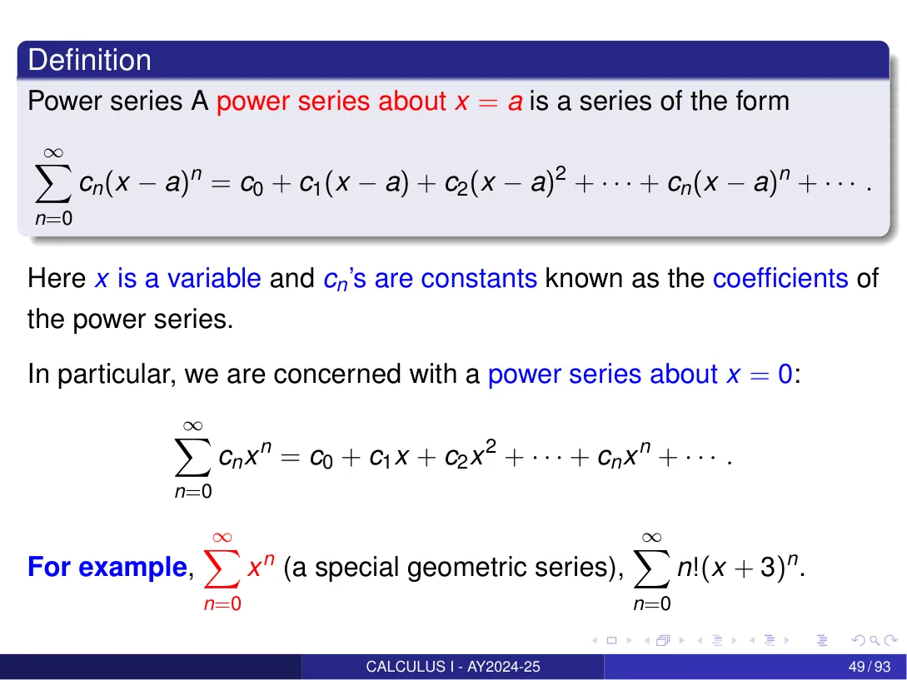
A power series about $x=a$ is $\sum_{n=0}^\infty c_n(x-a)^n=c_0+c_1(x-a)+c_2(x-a)^2+\cdots$; $x$ is a variable and the $c_n$ are the coefficients. We mostly use $a=0$: $\sum c_nx^n=c_0+c_1x+c_2x^2+\cdots$. Examples: $\sum x^n$ (a geometric series with ratio $x$) and $\sum n!\,(x+3)^n$ (centre $a=-3$, coefficients $c_n=n!$). A power series is an "infinite polynomial".
Chuỗi lũy thừa quanh $x=a$ là $\sum_{n=0}^\infty c_n(x-a)^n=c_0+c_1(x-a)+c_2(x-a)^2+\cdots$; $x$ là biến và $c_n$ là các hệ số. Ta chủ yếu dùng $a=0$: $\sum c_nx^n=c_0+c_1x+c_2x^2+\cdots$. Ví dụ: $\sum x^n$ (chuỗi hình học với công bội $x$) và $\sum n!\,(x+3)^n$ (tâm $a=-3$, hệ số $c_n=n!$). Chuỗi lũy thừa là một "đa thức vô hạn".
Find the sum of $\sum_{n=0}^\infty x^n$ at $x=\frac13$ and at $x=-\frac12$.
Tìm tổng của $\sum_{n=0}^\infty x^n$ tại $x=\frac13$ và tại $x=-\frac12$.
Answer and solution · Đáp án và lời giải
Answer · Đáp án: $\dfrac32$ and $\dfrac23$
Geometric series with ratio $x$ and $|x|<1$: sum $\frac1{1-x}$. At $x=\frac13$: $\frac1{2/3}=\frac32$. At $x=-\frac12$: $\frac1{3/2}=\frac23$.
Chuỗi hình học công bội $x$ và $|x|<1$: tổng $\frac1{1-x}$. Tại $x=\frac13$: $\frac1{2/3}=\frac32$. Tại $x=-\frac12$: $\frac1{3/2}=\frac23$.
Using a power series to approximate · Dùng chuỗi lũy thừa để xấp xỉ
★★★ Core · Cốt lõi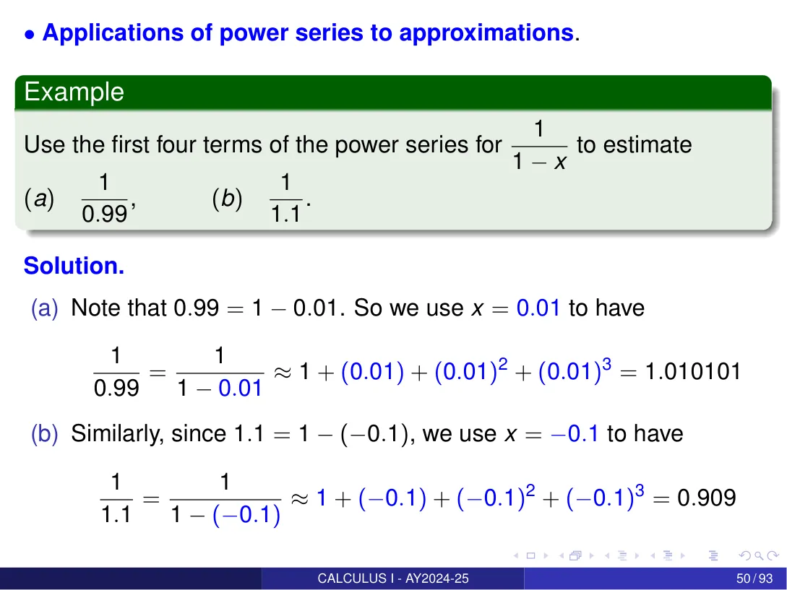
Use the first four terms of $\frac1{1-x}=1+x+x^2+x^3+\cdots$ to estimate $\frac1{0.99}$ and $\frac1{1.1}$. (a) $0.99=1-0.01$, so $x=0.01$: $1+0.01+0.01^2+0.01^3=1.010101$. (b) $1.1=1-(-0.1)$, so $x=-0.1$: $1-0.1+0.01-0.001=0.909$. The closer $x$ is to $0$, the fewer terms are needed.
Dùng bốn số hạng đầu của $\frac1{1-x}=1+x+x^2+x^3+\cdots$ để ước lượng $\frac1{0.99}$ và $\frac1{1.1}$. (a) $0.99=1-0.01$ nên $x=0.01$: $1+0.01+0.01^2+0.01^3=1.010101$. (b) $1.1=1-(-0.1)$ nên $x=-0.1$: $1-0.1+0.01-0.001=0.909$. $x$ càng gần $0$ thì càng cần ít số hạng.
Estimate $\frac1{0.98}$ and $\frac1{1.05}$ with the first four terms, and compare with the exact values.
Ước lượng $\frac1{0.98}$ và $\frac1{1.05}$ bằng bốn số hạng đầu, và so với giá trị chính xác.
Answer and solution · Đáp án và lời giải
Answer · Đáp án: $1.020408$ (exact $1.0204082$) and $0.952375$ (exact $0.9523810$)
$0.98=1-0.02$: $1+0.02+0.0004+0.000008=1.020408$. $1.05=1-(-0.05)$: $1-0.05+0.0025-0.000125=0.952375$. The errors are about $1.6\times10^{-7}$ and $6\times10^{-6}$: the estimate with the smaller $|x|$ ($0.02$ against $0.05$) is far more accurate.
$0.98=1-0.02$: $1+0.02+0.0004+0.000008=1.020408$. $1.05=1-(-0.05)$: $1-0.05+0.0025-0.000125=0.952375$. Sai số khoảng $1.6\times10^{-7}$ và $6\times10^{-6}$: ước lượng có $|x|$ nhỏ hơn ($0.02$ so với $0.05$) chính xác hơn nhiều.
Convergence of a power series: three cases · Sự hội tụ của chuỗi lũy thừa: ba trường hợp
★★★ Core · Cốt lõi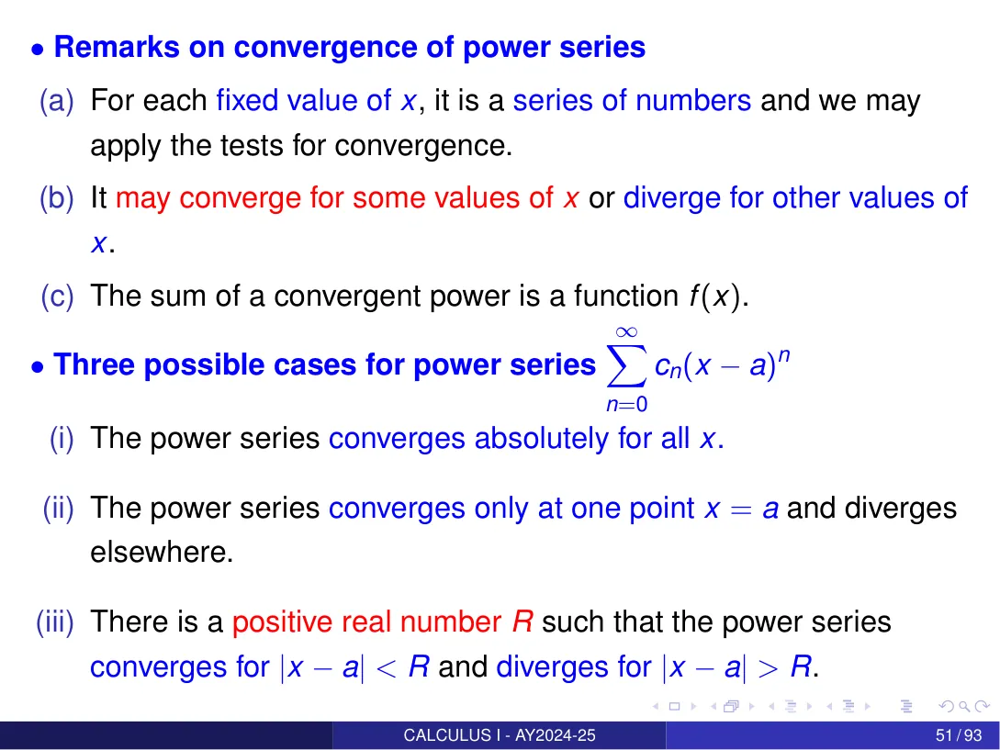
(a) For each fixed $x$ a power series is a series of numbers, so we may apply the tests for series. (b) It may converge for some $x$ and diverge for others. (c) The sum of a convergent power series is a function $f(x)$. For $\sum c_n(x-a)^n$ exactly one of three things happens: (i) it converges absolutely for all $x$; (ii) it converges only at $x=a$; (iii) there is a number $R>0$ such that it converges for $|x-a|<R$ and diverges for $|x-a|>R$.
(a) Với mỗi $x$ cố định chuỗi lũy thừa là chuỗi số, nên áp dụng được các tiêu chuẩn cho chuỗi. (b) Nó có thể hội tụ với một số $x$ và phân kỳ với các $x$ khác. (c) Tổng của chuỗi lũy thừa hội tụ là một hàm $f(x)$. Với $\sum c_n(x-a)^n$ xảy ra đúng một trong ba khả năng: (i) hội tụ tuyệt đối với mọi $x$; (ii) hội tụ chỉ tại $x=a$; (iii) tồn tại số $R>0$ sao cho nó hội tụ khi $|x-a|<R$ và phân kỳ khi $|x-a|>R$.
Which case occurs for $\sum\frac{x^n}{n!}$, $\sum n!\,x^n$ and $\sum x^n$? Use the ratio of consecutive coefficients.
Mỗi chuỗi $\sum\frac{x^n}{n!}$, $\sum n!\,x^n$ và $\sum x^n$ thuộc trường hợp nào? Dùng tỉ số các hệ số liên tiếp.
Answer and solution · Đáp án và lời giải
Answer · Đáp án: case (i) $R=\infty$; case (ii) $R=0$; case (iii) $R=1$
Ratios $\left|\frac{c_{n+1}}{c_n}\right|$: $\frac1{n+1}\to0$ (so $|x|\cdot0<1$ for all $x$: $R=\infty$); $n+1\to\infty$ (the limit $|x|(n+1)\to\infty$ unless $x=0$: $R=0$); $1$ (limit $|x|$: converges for $|x|<1$, $R=1$).
Tỉ số $\left|\frac{c_{n+1}}{c_n}\right|$: $\frac1{n+1}\to0$ (nên $|x|\cdot0<1$ với mọi $x$: $R=\infty$); $n+1\to\infty$ (giới hạn $|x|(n+1)\to\infty$ trừ khi $x=0$: $R=0$); $1$ (giới hạn $|x|$: hội tụ khi $|x|<1$, $R=1$).
Radius and interval of convergence · Bán kính và khoảng hội tụ
★★★ Core · Cốt lõi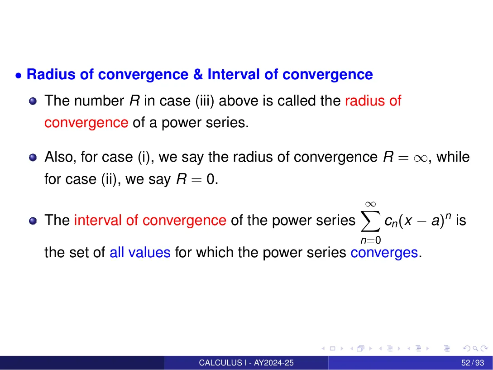
The number $R$ of case (iii) is the radius of convergence. In case (i) we say $R=\infty$ and in case (ii) $R=0$. The interval of convergence of $\sum c_n(x-a)^n$ is the set of all $x$ for which the series converges.
Số $R$ ở trường hợp (iii) là bán kính hội tụ. Ở trường hợp (i) ta nói $R=\infty$ và ở trường hợp (ii) $R=0$. Khoảng hội tụ của $\sum c_n(x-a)^n$ là tập mọi $x$ mà chuỗi hội tụ.
What the interval of convergence can look like · Khoảng hội tụ có thể trông thế nào
★★★ Core · Cốt lõi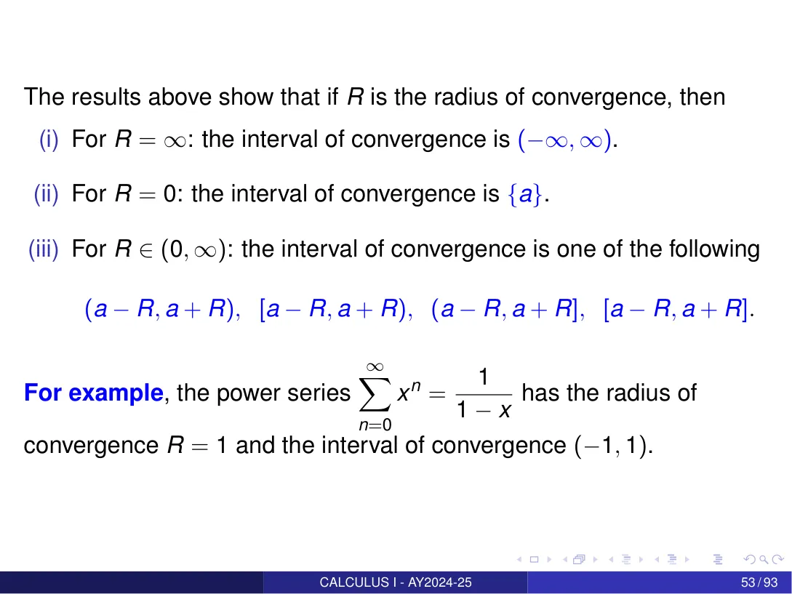
$R=\infty$: interval $(-\infty,\infty)$. $R=0$: interval $\{a\}$. $0<R<\infty$: one of four intervals, $(a-R,a+R)$, $[a-R,a+R)$, $(a-R,a+R]$, $[a-R,a+R]$, depending on the endpoints, which have to be tested separately. Example: $\sum x^n=\frac1{1-x}$ has $R=1$ and interval $(-1,1)$ (at $x=\pm1$ the terms do not tend to $0$).
$R=\infty$: khoảng $(-\infty,\infty)$. $R=0$: khoảng $\{a\}$. $0<R<\infty$: một trong bốn khoảng $(a-R,a+R)$, $[a-R,a+R)$, $(a-R,a+R]$, $[a-R,a+R]$, tùy theo hai đầu mút, phải xét riêng. Ví dụ: $\sum x^n=\frac1{1-x}$ có $R=1$ và khoảng $(-1,1)$ (tại $x=\pm1$ các số hạng không tiến về $0$).
Find the interval of convergence of $\sum_{n=1}^\infty\frac{x^n}n$ and of $\sum_{n=1}^\infty\frac{x^n}{n^2}$.
Tìm khoảng hội tụ của $\sum_{n=1}^\infty\frac{x^n}n$ và của $\sum_{n=1}^\infty\frac{x^n}{n^2}$.
Answer and solution · Đáp án và lời giải
Answer · Đáp án: $[-1,1)$ and $[-1,1]$
Both have $\left|\frac{c_{n+1}}{c_n}\right|\to1$, so $R=1$. First: $x=1$ is the harmonic series (diverges), $x=-1$ the alternating harmonic series (converges): $[-1,1)$. Second: $x=\pm1$ give $\sum\frac1{n^2}$ and $\sum\frac{(-1)^n}{n^2}$, both convergent ($p=2$): $[-1,1]$.
Cả hai có $\left|\frac{c_{n+1}}{c_n}\right|\to1$ nên $R=1$. Chuỗi đầu: $x=1$ là chuỗi điều hòa (phân kỳ), $x=-1$ là chuỗi điều hòa đan dấu (hội tụ): $[-1,1)$. Chuỗi sau: $x=\pm1$ cho $\sum\frac1{n^2}$ và $\sum\frac{(-1)^n}{n^2}$, đều hội tụ ($p=2$): $[-1,1]$.
How to find $R$ and the interval, step 1 · Cách tìm $R$ và khoảng hội tụ, bước 1
★★★ Core · Cốt lõi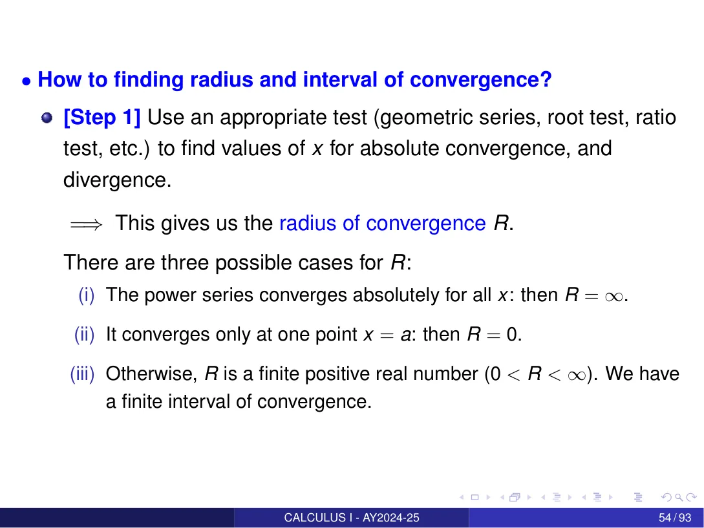
Step 1: use a suitable test (geometric series, ratio test, root test) to find the values of $x$ for which the series converges absolutely and those for which it diverges; this gives the radius $R$. Three outcomes: (i) absolute convergence for all $x$, so $R=\infty$; (ii) convergence only at $x=a$, so $R=0$; (iii) otherwise $0<R<\infty$ and we have a finite interval.
Bước 1: dùng một tiêu chuẩn phù hợp (chuỗi hình học, tiêu chuẩn tỉ số, tiêu chuẩn căn) để tìm các giá trị $x$ làm chuỗi hội tụ tuyệt đối và các giá trị làm chuỗi phân kỳ; từ đó có bán kính $R$. Ba kết quả: (i) hội tụ tuyệt đối với mọi $x$, nên $R=\infty$; (ii) chỉ hội tụ tại $x=a$, nên $R=0$; (iii) còn lại $0<R<\infty$ và ta có một khoảng hữu hạn.
How to find $R$ and the interval, step 2: endpoints · Cách tìm $R$ và khoảng hội tụ, bước 2: đầu mút
★★★ Core · Cốt lõi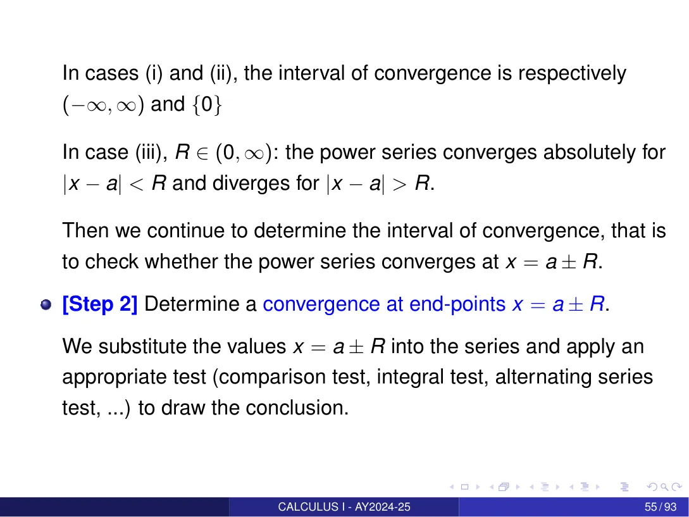
In cases (i) and (ii) the interval is $(-\infty,\infty)$ and $\{a\}$. In case (iii) the series converges absolutely for $|x-a|<R$ and diverges for $|x-a|>R$; at the two endpoints $x=a\pm R$ the ratio test says nothing (the limit is $1$), so Step 2: substitute each endpoint into the series and apply a test for numerical series (comparison, integral, alternating, $p$-series).
Ở các trường hợp (i) và (ii) khoảng là $(-\infty,\infty)$ và $\{a\}$. Ở trường hợp (iii) chuỗi hội tụ tuyệt đối khi $|x-a|<R$ và phân kỳ khi $|x-a|>R$; tại hai đầu mút $x=a\pm R$ tiêu chuẩn tỉ số không cho kết luận (giới hạn bằng $1$), nên Bước 2: thay từng đầu mút vào chuỗi và áp dụng một tiêu chuẩn cho chuỗi số (so sánh, tích phân, đan dấu, chuỗi $p$).
Forgetting to test the endpoints is the single most common mistake: the ratio test always leaves them undecided.
Quên xét hai đầu mút là lỗi phổ biến nhất: tiêu chuẩn tỉ số luôn để chúng chưa xác định.
Find $R$ and the interval of convergence of $\sum_{n=1}^\infty\frac{n\,x^n}{4^n}$.
Tìm $R$ và khoảng hội tụ của $\sum_{n=1}^\infty\frac{n\,x^n}{4^n}$.
Answer and solution · Đáp án và lời giải
Answer · Đáp án: $R=4$; interval $(-4,4)$
Ratio: $\frac{(n+1)|x|^{n+1}/4^{n+1}}{n|x|^n/4^n}=\frac{n+1}n\cdot\frac{|x|}4\to\frac{|x|}4$, so $R=4$. Endpoints: $x=\pm4$ give $\sum n(\pm1)^n$ whose terms do not tend to $0$ (test for divergence): both diverge. Interval $(-4,4)$.
Tỉ số: $\frac{(n+1)|x|^{n+1}/4^{n+1}}{n|x|^n/4^n}=\frac{n+1}n\cdot\frac{|x|}4\to\frac{|x|}4$, nên $R=4$. Đầu mút: $x=\pm4$ cho $\sum n(\pm1)^n$ có số hạng không tiến về $0$ (tiêu chuẩn phân kỳ): cả hai phân kỳ. Khoảng $(-4,4)$.
Example: $\sum\frac{x^n}{n2^n}$, step 1 begins · Ví dụ: $\sum\frac{x^n}{n2^n}$, bước 1 bắt đầu
★★★ Core · Cốt lõi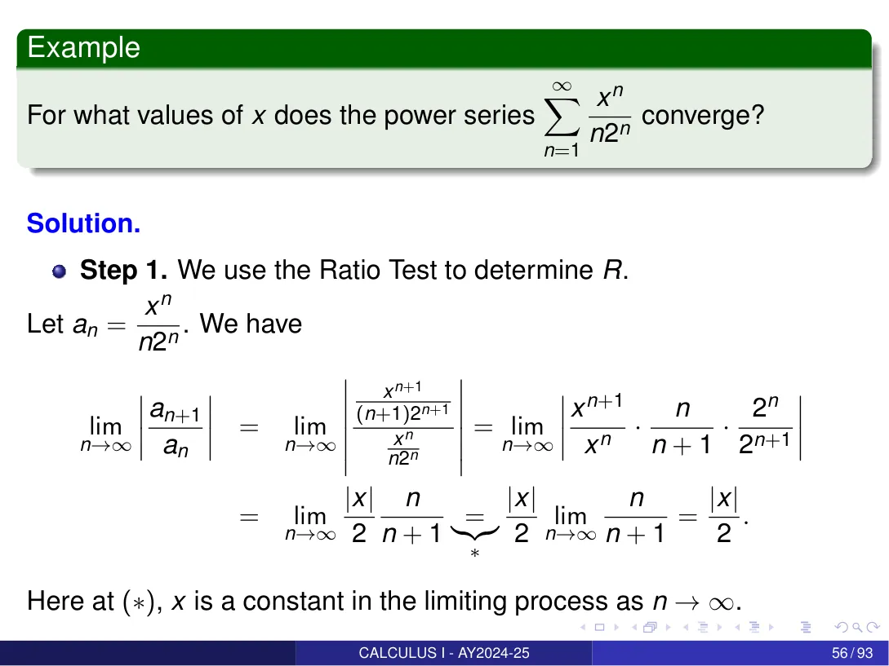
For which $x$ does $\sum_{n=1}^\infty\frac{x^n}{n2^n}$ converge? Step 1 with the ratio test, $a_n=\frac{x^n}{n2^n}$: $\left|\frac{a_{n+1}}{a_n}\right|=\frac{|x|^{n+1}}{(n+1)2^{n+1}}\cdot\frac{n2^n}{|x|^n}=\frac{|x|}2\cdot\frac n{n+1}\to\frac{|x|}2$. In the limit $x$ is a constant: only $n$ moves.
Với những $x$ nào $\sum_{n=1}^\infty\frac{x^n}{n2^n}$ hội tụ? Bước 1 bằng tiêu chuẩn tỉ số, $a_n=\frac{x^n}{n2^n}$: $\left|\frac{a_{n+1}}{a_n}\right|=\frac{|x|^{n+1}}{(n+1)2^{n+1}}\cdot\frac{n2^n}{|x|^n}=\frac{|x|}2\cdot\frac n{n+1}\to\frac{|x|}2$. Trong giới hạn $x$ là hằng số: chỉ $n$ thay đổi.
Example, continued: the radius $R=2$ · Ví dụ, tiếp: bán kính $R=2$
★★★ Core · Cốt lõi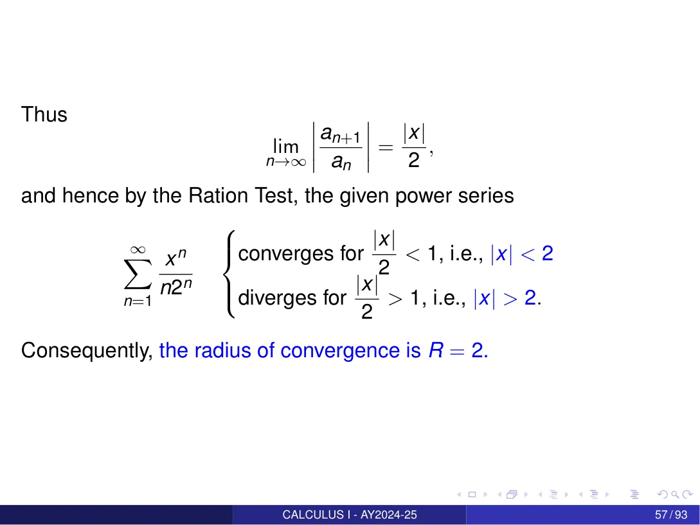
Since $\lim\left|\frac{a_{n+1}}{a_n}\right|=\frac{|x|}2$, the ratio test shows convergence when $\frac{|x|}2<1$, i.e. $|x|<2$, and divergence when $\frac{|x|}2>1$, i.e. $|x|>2$. Therefore the radius of convergence is $R=2$.
Vì $\lim\left|\frac{a_{n+1}}{a_n}\right|=\frac{|x|}2$, tiêu chuẩn tỉ số cho hội tụ khi $\frac{|x|}2<1$, tức $|x|<2$, và phân kỳ khi $\frac{|x|}2>1$, tức $|x|>2$. Do đó bán kính hội tụ là $R=2$.
Find the radius of convergence of $\sum_{n=0}^\infty\frac{(2x)^n}{3^n}$ and of $\sum_{n=1}^\infty\frac{(x-1)^n}{n\,3^n}$.
Tìm bán kính hội tụ của $\sum_{n=0}^\infty\frac{(2x)^n}{3^n}$ và của $\sum_{n=1}^\infty\frac{(x-1)^n}{n\,3^n}$.
Answer and solution · Đáp án và lời giải
Answer · Đáp án: $R=\dfrac32$ and $R=3$ (centre $1$)
First: ratio $\frac{2|x|}3<1\iff|x|<\frac32$, so $R=\frac32$ (centre $0$). Second: ratio $\frac{|x-1|}3\cdot\frac n{n+1}\to\frac{|x-1|}3<1\iff|x-1|<3$: $R=3$ with centre $1$.
Chuỗi đầu: tỉ số $\frac{2|x|}3<1\iff|x|<\frac32$ nên $R=\frac32$ (tâm $0$). Chuỗi sau: tỉ số $\frac{|x-1|}3\cdot\frac n{n+1}\to\frac{|x-1|}3<1\iff|x-1|<3$: $R=3$ với tâm $1$.
Example, continued: the endpoints $x=\pm2$ · Ví dụ, tiếp: các đầu mút $x=\pm2$
★★★ Core · Cốt lõi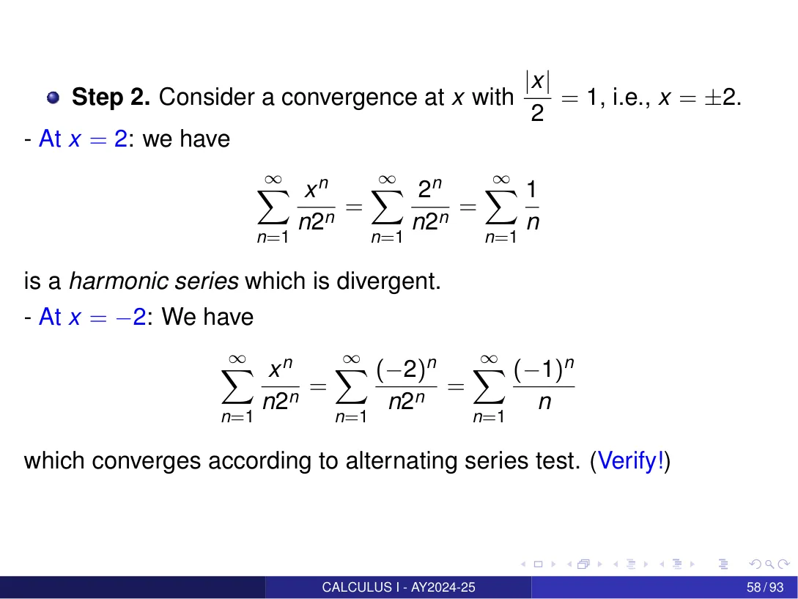
Step 2. At $x=2$: $\sum\frac{2^n}{n2^n}=\sum\frac1n$, the harmonic series, diverges. At $x=-2$: $\sum\frac{(-2)^n}{n2^n}=\sum\frac{(-1)^n}n$, which converges by the alternating series test. The two endpoints behave differently, which is why they must be tested one by one.
Bước 2. Tại $x=2$: $\sum\frac{2^n}{n2^n}=\sum\frac1n$, chuỗi điều hòa, phân kỳ. Tại $x=-2$: $\sum\frac{(-2)^n}{n2^n}=\sum\frac{(-1)^n}n$, hội tụ theo tiêu chuẩn đan dấu. Hai đầu mút xử sự khác nhau, nên phải xét từng đầu mút.
Example, conclusion: interval $[-2,2)$ · Ví dụ, kết luận: khoảng $[-2,2)$
★★★ Core · Cốt lõi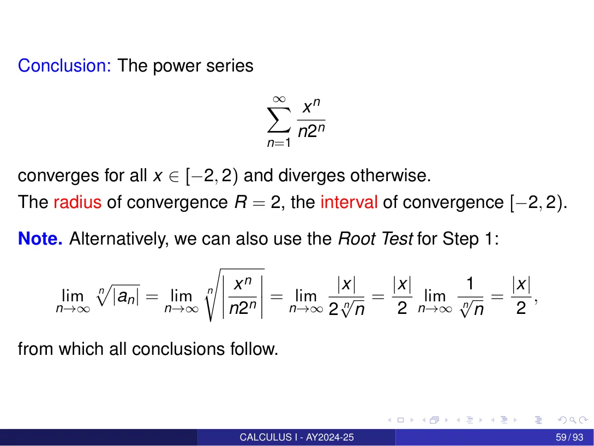
Conclusion: the series converges for all $x\in[-2,2)$ and diverges otherwise: radius $R=2$, interval of convergence $[-2,2)$. The root test also works for Step 1: $\sqrt[n]{\left|\frac{x^n}{n2^n}\right|}=\frac{|x|}{2\sqrt[n]n}\to\frac{|x|}2$, with the same conclusions.
Kết luận: chuỗi hội tụ với mọi $x\in[-2,2)$ và phân kỳ ở ngoài: bán kính $R=2$, khoảng hội tụ $[-2,2)$. Tiêu chuẩn căn cũng dùng được cho Bước 1: $\sqrt[n]{\left|\frac{x^n}{n2^n}\right|}=\frac{|x|}{2\sqrt[n]n}\to\frac{|x|}2$, với cùng kết luận.
Find the interval of convergence of $\displaystyle\sum_{n=1}^\infty\frac{(x-1)^n}{n\,3^n}$ (all the steps).
Tìm khoảng hội tụ của $\displaystyle\sum_{n=1}^\infty\frac{(x-1)^n}{n\,3^n}$ (đủ các bước).
Answer and solution · Đáp án và lời giải
Answer · Đáp án: $[-2,4)$
Step 1: $R=3$, centre $1$: converges absolutely on $(-2,4)$. Step 2: at $x=4$ the series is $\sum\frac{3^n}{n3^n}=\sum\frac1n$ (diverges). At $x=-2$ it is $\sum\frac{(-3)^n}{n3^n}=\sum\frac{(-1)^n}n$ (converges, alternating test). Interval $[-2,4)$.
Bước 1: $R=3$, tâm $1$: hội tụ tuyệt đối trên $(-2,4)$. Bước 2: tại $x=4$ chuỗi là $\sum\frac{3^n}{n3^n}=\sum\frac1n$ (phân kỳ). Tại $x=-2$ là $\sum\frac{(-3)^n}{n3^n}=\sum\frac{(-1)^n}n$ (hội tụ, tiêu chuẩn đan dấu). Khoảng $[-2,4)$.
Two extreme examples: $R=\infty$ and $R=0$ · Hai ví dụ cực trị: $R=\infty$ và $R=0$
★★★ Core · Cốt lõi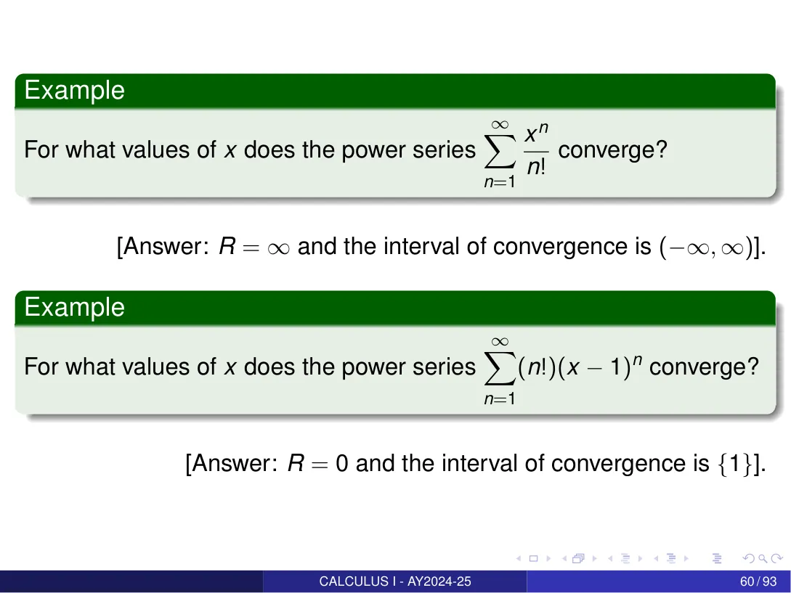
$\sum_{n=1}^\infty\frac{x^n}{n!}$ has $R=\infty$, interval $(-\infty,\infty)$: the ratio is $\frac{|x|}{n+1}\to0<1$ for every $x$. $\sum_{n=1}^\infty n!\,(x-1)^n$ has $R=0$, interval $\{1\}$: the ratio is $(n+1)|x-1|\to\infty$ for every $x\ne1$. These are the two extreme cases of the trichotomy of slide 4.
$\sum_{n=1}^\infty\frac{x^n}{n!}$ có $R=\infty$, khoảng $(-\infty,\infty)$: tỉ số là $\frac{|x|}{n+1}\to0<1$ với mọi $x$. $\sum_{n=1}^\infty n!\,(x-1)^n$ có $R=0$, khoảng $\{1\}$: tỉ số là $(n+1)|x-1|\to\infty$ với mọi $x\ne1$. Đây là hai trường hợp cực trị của sự phân loại ở slide 4.
Find the radius of convergence of $\sum\frac{(3x)^n}{n!}$ and of $\sum n^n x^n$.
Tìm bán kính hội tụ của $\sum\frac{(3x)^n}{n!}$ và của $\sum n^n x^n$.
Answer and solution · Đáp án và lời giải
Answer · Đáp án: $R=\infty$ and $R=0$
First: ratio $\frac{3|x|}{n+1}\to0$ for every $x$, $R=\infty$. Second: root test, $\sqrt[n]{n^n|x|^n}=n|x|\to\infty$ for every $x\ne0$: it diverges everywhere except $x=0$, $R=0$.
Chuỗi đầu: tỉ số $\frac{3|x|}{n+1}\to0$ với mọi $x$, $R=\infty$. Chuỗi sau: tiêu chuẩn căn, $\sqrt[n]{n^n|x|^n}=n|x|\to\infty$ với mọi $x\ne0$: phân kỳ khắp nơi trừ $x=0$, $R=0$.
Term-by-term differentiation · Đạo hàm từng số hạng
★★★ Core · Cốt lõi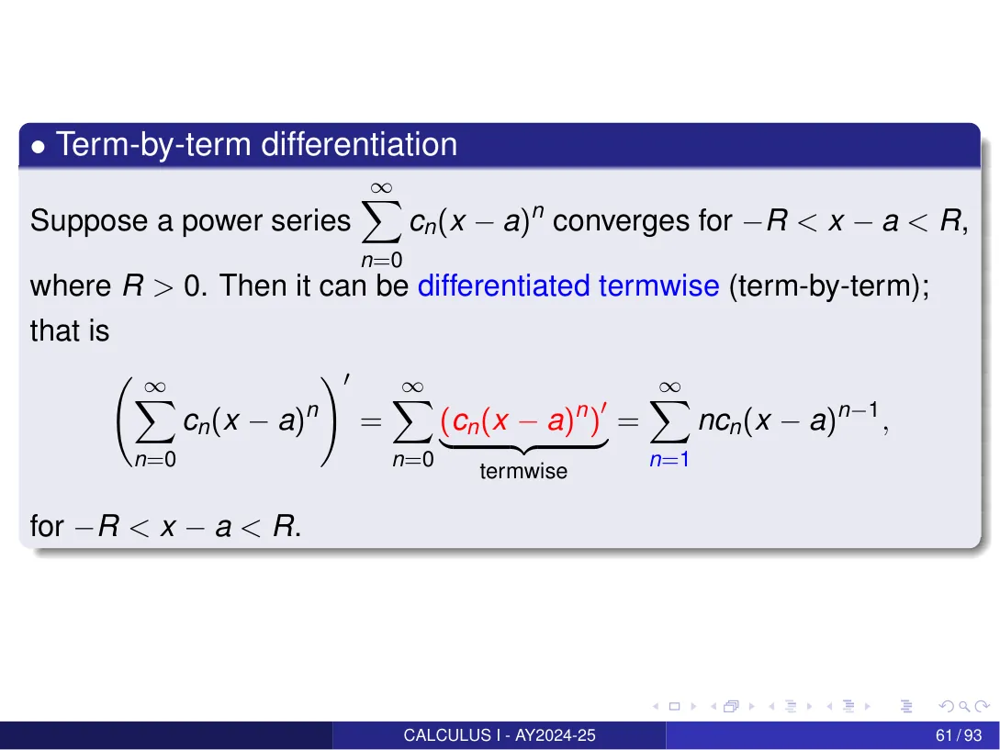
If $\sum c_n(x-a)^n$ converges for $|x-a|<R$ with $R>0$, it can be differentiated term by term: $\left(\sum_{n=0}^\infty c_n(x-a)^n\right)'=\sum_{n=1}^\infty nc_n(x-a)^{n-1}$ for $|x-a|<R$. (The constant term $c_0$ disappears, so the new sum starts at $n=1$.) The radius of convergence stays the same; the behaviour at the endpoints may change.
Nếu $\sum c_n(x-a)^n$ hội tụ khi $|x-a|<R$ với $R>0$, nó có thể được đạo hàm từng số hạng: $\left(\sum_{n=0}^\infty c_n(x-a)^n\right)'=\sum_{n=1}^\infty nc_n(x-a)^{n-1}$ khi $|x-a|<R$. (Số hạng hằng $c_0$ biến mất, nên tổng mới bắt đầu từ $n=1$.) Bán kính hội tụ không đổi; tình trạng tại đầu mút có thể thay đổi.
Differentiate $\sum_{n=0}^\infty\frac{x^n}{n!}$ term by term and say what function this series defines.
Đạo hàm từng số hạng $\sum_{n=0}^\infty\frac{x^n}{n!}$ và cho biết chuỗi này định nghĩa hàm nào.
Answer and solution · Đáp án và lời giải
Answer · Đáp án: the series is its own derivative: $e^x$
$\left(\frac{x^n}{n!}\right)'=\frac{nx^{n-1}}{n!}=\frac{x^{n-1}}{(n-1)!}$, so the derivative is $\sum_{n=1}^\infty\frac{x^{n-1}}{(n-1)!}=\sum_{m=0}^\infty\frac{x^m}{m!}$, the same series. A function equal to its own derivative with $f(0)=1$ is $e^x$.
$\left(\frac{x^n}{n!}\right)'=\frac{nx^{n-1}}{n!}=\frac{x^{n-1}}{(n-1)!}$, nên đạo hàm là $\sum_{n=1}^\infty\frac{x^{n-1}}{(n-1)!}=\sum_{m=0}^\infty\frac{x^m}{m!}$, chính chuỗi đó. Hàm bằng chính đạo hàm của nó với $f(0)=1$ là $e^x$.
Higher derivatives term by term · Đạo hàm cấp cao từng số hạng
★★★ Core · Cốt lõi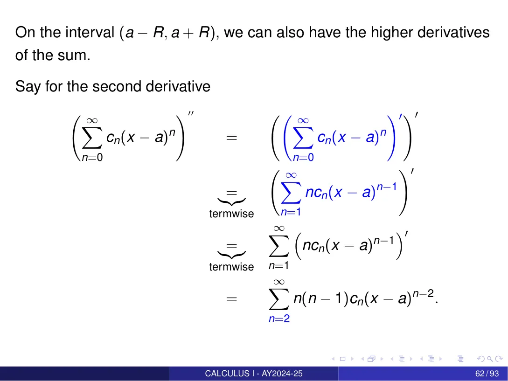
On $(a-R,a+R)$ we can differentiate again and again. The second derivative is $\sum_{n=2}^\infty n(n-1)c_n(x-a)^{n-2}$: each differentiation lowers the powers by one and kills one more constant term, so the sum starts one index later. In general the $k$-th derivative is $\sum_{n=k}^\infty n(n-1)\cdots(n-k+1)c_n(x-a)^{n-k}$.
Trên $(a-R,a+R)$ ta có thể đạo hàm lặp lại nhiều lần. Đạo hàm cấp hai là $\sum_{n=2}^\infty n(n-1)c_n(x-a)^{n-2}$: mỗi lần đạo hàm hạ số mũ đi một và loại thêm một số hạng hằng, nên tổng bắt đầu muộn hơn một chỉ số. Tổng quát đạo hàm cấp $k$ là $\sum_{n=k}^\infty n(n-1)\cdots(n-k+1)c_n(x-a)^{n-k}$.
Differentiate $\frac1{1-x}=\sum x^n$ twice term by term and check the first terms of $\frac2{(1-x)^3}$.
Đạo hàm hai lần từng số hạng $\frac1{1-x}=\sum x^n$ và kiểm tra các số hạng đầu của $\frac2{(1-x)^3}$.
Answer and solution · Đáp án và lời giải
Answer · Đáp án: $\dfrac2{(1-x)^3}=2+6x+12x^2+20x^3+\cdots$
$\left(\frac1{1-x}\right)''=\frac2{(1-x)^3}$ and termwise $\sum_{n=2}^\infty n(n-1)x^{n-2}=2+6x+12x^2+20x^3+\cdots$ (coefficients $2\cdot1,3\cdot2,4\cdot3,5\cdot4$).
$\left(\frac1{1-x}\right)''=\frac2{(1-x)^3}$ và từng số hạng $\sum_{n=2}^\infty n(n-1)x^{n-2}=2+6x+12x^2+20x^3+\cdots$ (hệ số $2\cdot1,3\cdot2,4\cdot3,5\cdot4$).
Term-by-term integration · Tích phân từng số hạng
★★★ Core · Cốt lõi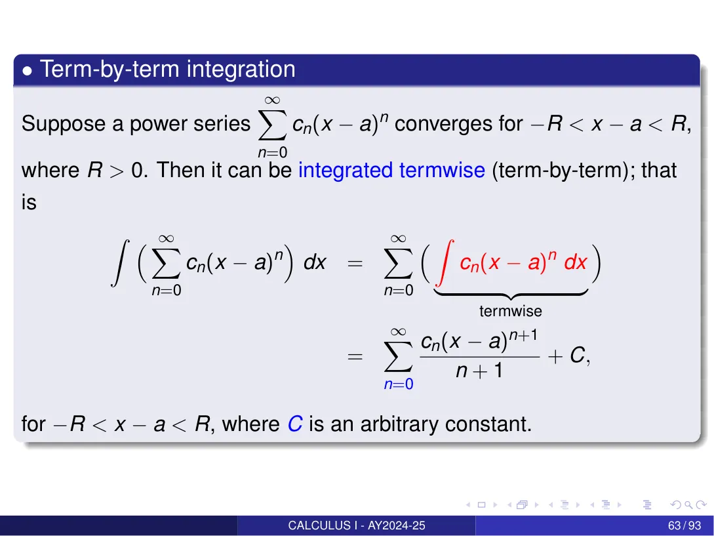
Within $|x-a|<R$ a power series can be integrated term by term: $\int\sum c_n(x-a)^n\,dx=\sum\frac{c_n(x-a)^{n+1}}{n+1}+C$. The constant $C$ is found by evaluating at a convenient point (usually $x=a$ or $x=0$). Differentiation and integration are the two tools that let us derive new series from the geometric series.
Trong $|x-a|<R$ chuỗi lũy thừa có thể được tích phân từng số hạng: $\int\sum c_n(x-a)^n\,dx=\sum\frac{c_n(x-a)^{n+1}}{n+1}+C$. Hằng số $C$ được tìm bằng cách tính tại một điểm thuận tiện (thường $x=a$ hoặc $x=0$). Đạo hàm và tích phân là hai công cụ cho phép rút ra chuỗi mới từ chuỗi hình học.
Starting from $\frac1{1+t^2}=\sum(-t^2)^n$, integrate term by term to get the power series of $\tan^{-1}x$.
Xuất phát từ $\frac1{1+t^2}=\sum(-t^2)^n$, tích phân từng số hạng để được chuỗi lũy thừa của $\tan^{-1}x$.
Answer and solution · Đáp án và lời giải
Answer · Đáp án: $\tan^{-1}x=x-\dfrac{x^3}3+\dfrac{x^5}5-\dfrac{x^7}7+\cdots$ ($|x|<1$)
$\frac1{1+t^2}=\frac1{1-(-t^2)}=1-t^2+t^4-t^6+\cdots$ for $|t|<1$. Integrating from $0$ to $x$ (so that $C=\tan^{-1}0=0$): $x-\frac{x^3}3+\frac{x^5}5-\frac{x^7}7+\cdots=\sum\frac{(-1)^nx^{2n+1}}{2n+1}$.
$\frac1{1+t^2}=\frac1{1-(-t^2)}=1-t^2+t^4-t^6+\cdots$ với $|t|<1$. Tích phân từ $0$ đến $x$ (nên $C=\tan^{-1}0=0$): $x-\frac{x^3}3+\frac{x^5}5-\frac{x^7}7+\cdots=\sum\frac{(-1)^nx^{2n+1}}{2n+1}$.
Example: series of $f'$ and of $\frac1{(1-x)^3}$ · Ví dụ: chuỗi của $f'$ và của $\frac1{(1-x)^3}$
★★★ Core · Cốt lõi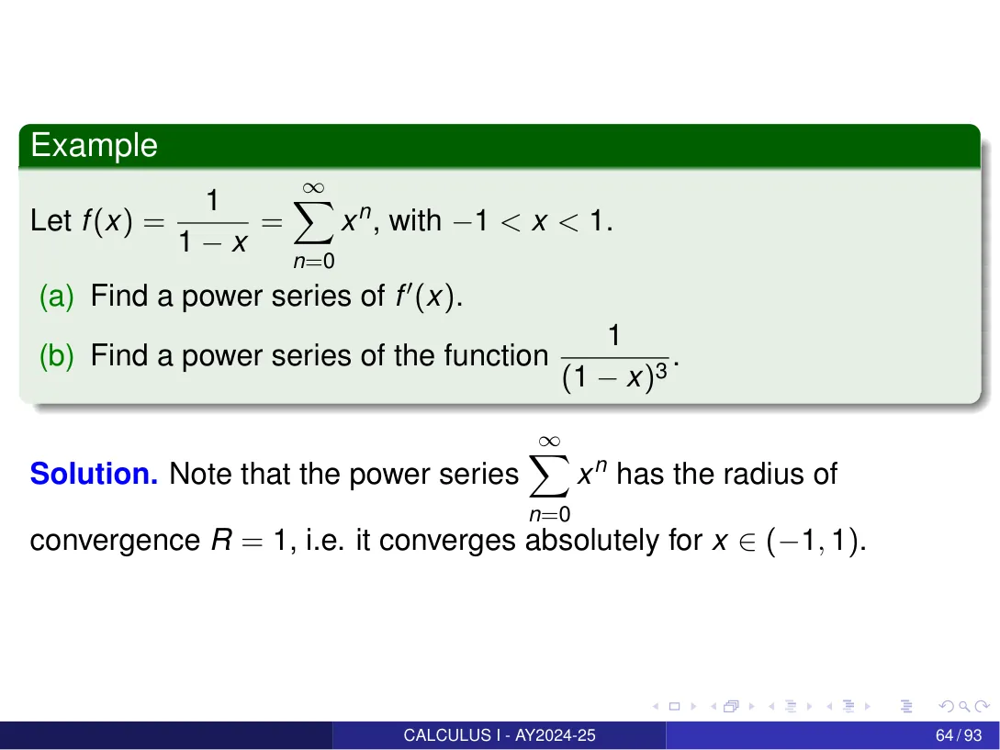
Let $f(x)=\frac1{1-x}=\sum_{n=0}^\infty x^n$ for $-1<x<1$. (a) Find a power series of $f'(x)$. (b) Find a power series of $\frac1{(1-x)^3}$. The geometric series has $R=1$, so it converges absolutely on $(-1,1)$, and termwise differentiation is allowed there.
Cho $f(x)=\frac1{1-x}=\sum_{n=0}^\infty x^n$ với $-1<x<1$. (a) Tìm chuỗi lũy thừa của $f'(x)$. (b) Tìm chuỗi lũy thừa của $\frac1{(1-x)^3}$. Chuỗi hình học có $R=1$ nên hội tụ tuyệt đối trên $(-1,1)$, và đạo hàm từng số hạng được phép ở đó.
(a) The series of $\frac1{(1-x)^2}$ · (a) Chuỗi của $\frac1{(1-x)^2}$
★★★ Core · Cốt lõi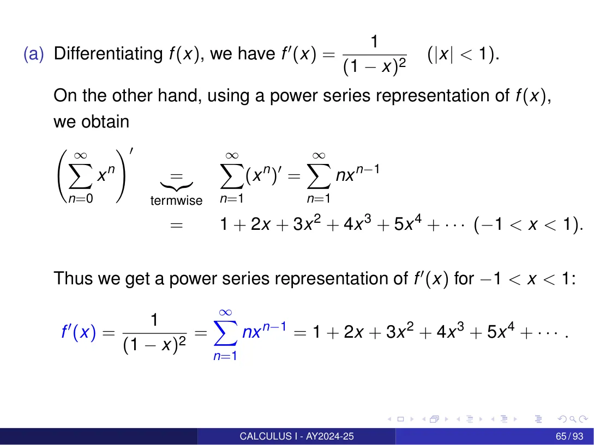
Differentiating the function: $f'(x)=\frac1{(1-x)^2}$. Differentiating the series term by term: $\left(\sum_{n=0}^\infty x^n\right)'=\sum_{n=1}^\infty nx^{n-1}=1+2x+3x^2+4x^3+\cdots$. Hence for $-1<x<1$: $\frac1{(1-x)^2}=\sum_{n=1}^\infty nx^{n-1}$. Same function, two computations: that is how the new series is obtained.
Đạo hàm hàm số: $f'(x)=\frac1{(1-x)^2}$. Đạo hàm chuỗi từng số hạng: $\left(\sum_{n=0}^\infty x^n\right)'=\sum_{n=1}^\infty nx^{n-1}=1+2x+3x^2+4x^3+\cdots$. Do đó với $-1<x<1$: $\frac1{(1-x)^2}=\sum_{n=1}^\infty nx^{n-1}$. Cùng một hàm, hai cách tính: đó là cách thu được chuỗi mới.
Use $\frac1{(1-x)^2}=\sum nx^{n-1}$ at $x=\frac12$ to find $\displaystyle\sum_{n=1}^\infty\frac n{2^n}$.
Dùng $\frac1{(1-x)^2}=\sum nx^{n-1}$ tại $x=\frac12$ để tìm $\displaystyle\sum_{n=1}^\infty\frac n{2^n}$.
Answer and solution · Đáp án và lời giải
Answer · Đáp án: $2$
At $x=\frac12$ (inside $|x|<1$): $\sum n\left(\frac12\right)^{n-1}=\frac1{(1/2)^2}=4$. Then $\sum\frac n{2^n}=\frac12\sum n\left(\frac12\right)^{n-1}=\frac12\cdot4=2$.
Tại $x=\frac12$ (trong $|x|<1$): $\sum n\left(\frac12\right)^{n-1}=\frac1{(1/2)^2}=4$. Khi đó $\sum\frac n{2^n}=\frac12\sum n\left(\frac12\right)^{n-1}=\frac12\cdot4=2$.
(b) Differentiating again · (b) Đạo hàm lần nữa
★★★ Core · Cốt lõi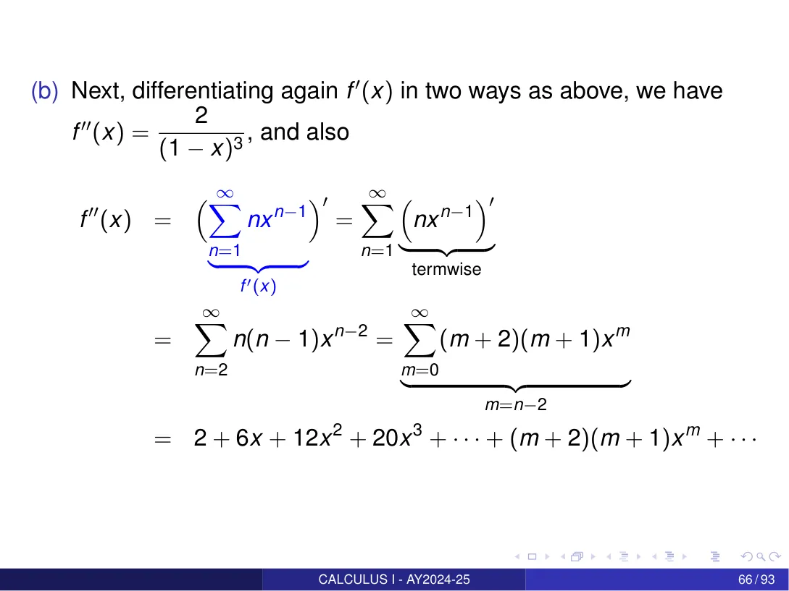
Differentiate once more both ways. Function: $f''(x)=\frac2{(1-x)^3}$. Series: $\left(\sum_{n=1}^\infty nx^{n-1}\right)'=\sum_{n=2}^\infty n(n-1)x^{n-2}$; shift the index with $m=n-2$ to get $\sum_{m=0}^\infty(m+2)(m+1)x^m=2+6x+12x^2+20x^3+\cdots$. Always re-index so that the power of $x$ is $x^m$ and the sum starts at $m=0$.
Đạo hàm thêm một lần theo cả hai cách. Hàm: $f''(x)=\frac2{(1-x)^3}$. Chuỗi: $\left(\sum_{n=1}^\infty nx^{n-1}\right)'=\sum_{n=2}^\infty n(n-1)x^{n-2}$; dời chỉ số bằng $m=n-2$ để được $\sum_{m=0}^\infty(m+2)(m+1)x^m=2+6x+12x^2+20x^3+\cdots$. Luôn đổi chỉ số để lũy thừa của $x$ là $x^m$ và tổng bắt đầu từ $m=0$.
The series of $\frac1{(1-x)^3}$ · Chuỗi của $\frac1{(1-x)^3}$
★★★ Core · Cốt lõi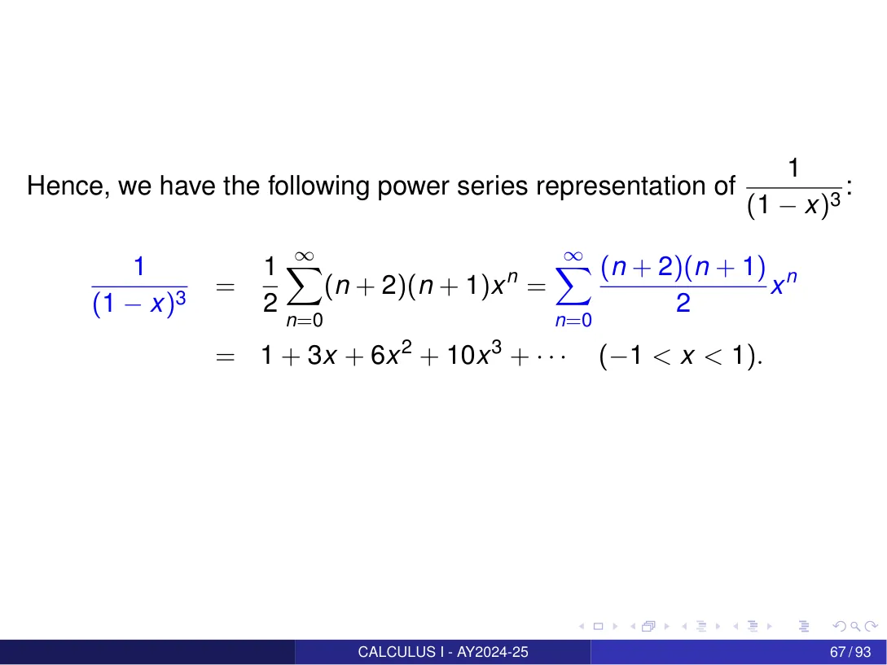
Dividing by $2$: $\frac1{(1-x)^3}=\frac12\sum_{n=0}^\infty(n+2)(n+1)x^n=\sum_{n=0}^\infty\frac{(n+2)(n+1)}2x^n=1+3x+6x^2+10x^3+\cdots$ for $-1<x<1$. The coefficients $1,3,6,10,\dots$ are the triangular numbers.
Chia cho $2$: $\frac1{(1-x)^3}=\frac12\sum_{n=0}^\infty(n+2)(n+1)x^n=\sum_{n=0}^\infty\frac{(n+2)(n+1)}2x^n=1+3x+6x^2+10x^3+\cdots$ với $-1<x<1$. Các hệ số $1,3,6,10,\dots$ là các số tam giác.
Find the power series of $\dfrac x{(1-x)^2}$ and write its first five terms.
Tìm chuỗi lũy thừa của $\dfrac x{(1-x)^2}$ và viết năm số hạng đầu.
Answer and solution · Đáp án và lời giải
Answer · Đáp án: $\sum_{n=1}^\infty nx^n=x+2x^2+3x^3+4x^4+5x^5+\cdots$
Multiply $\frac1{(1-x)^2}=\sum_{n=1}^\infty nx^{n-1}$ by $x$: $\sum_{n=1}^\infty nx^n=x+2x^2+3x^3+4x^4+5x^5+\cdots$ for $|x|<1$.
Nhân $\frac1{(1-x)^2}=\sum_{n=1}^\infty nx^{n-1}$ với $x$: $\sum_{n=1}^\infty nx^n=x+2x^2+3x^3+4x^4+5x^5+\cdots$ với $|x|<1$.
The power series of $\ln(1+x)$: setting up · Chuỗi lũy thừa của $\ln(1+x)$: thiết lập
★★★ Core · Cốt lõi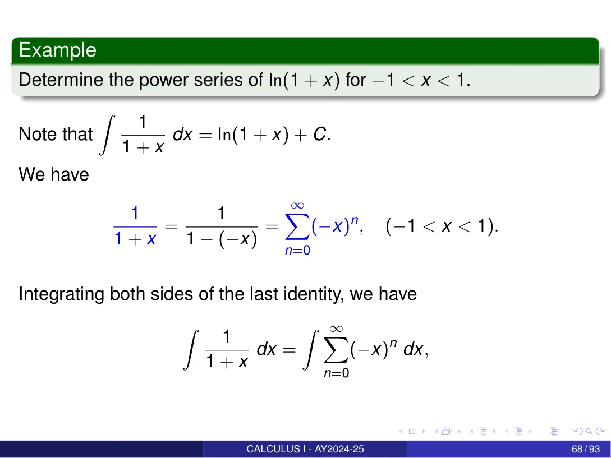
Find the power series of $\ln(1+x)$ for $-1<x<1$. Since $\int\frac{dx}{1+x}=\ln(1+x)+C$, start from the geometric series with ratio $-x$: $\frac1{1+x}=\frac1{1-(-x)}=\sum_{n=0}^\infty(-x)^n$ for $-1<x<1$, and integrate both sides.
Tìm chuỗi lũy thừa của $\ln(1+x)$ với $-1<x<1$. Vì $\int\frac{dx}{1+x}=\ln(1+x)+C$, xuất phát từ chuỗi hình học công bội $-x$: $\frac1{1+x}=\frac1{1-(-x)}=\sum_{n=0}^\infty(-x)^n$ với $-1<x<1$, rồi tích phân hai vế.
The series of $\ln(1+x)$: result · Chuỗi của $\ln(1+x)$: kết quả
★★★ Core · Cốt lõi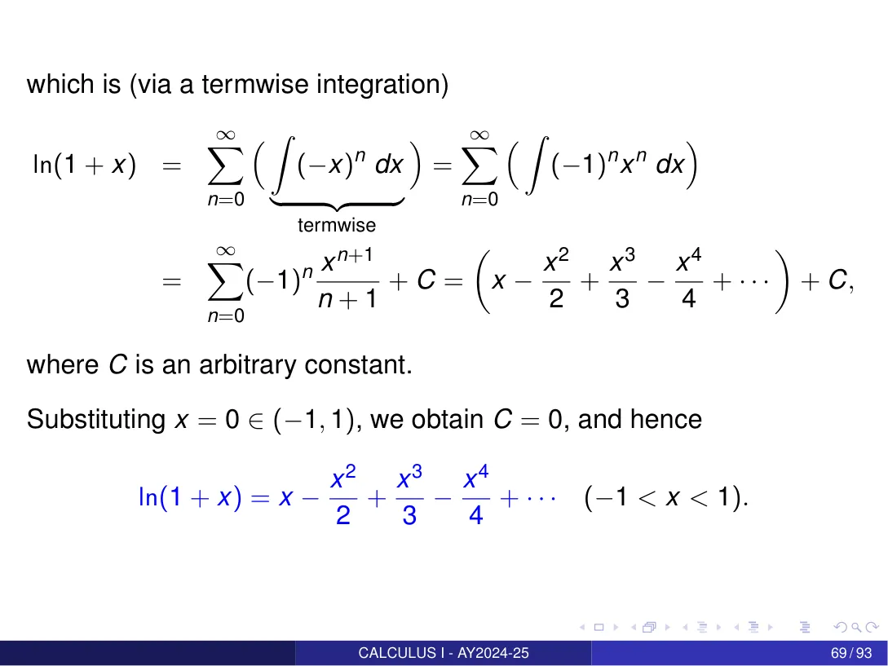
Integrating termwise: $\ln(1+x)=\sum_{n=0}^\infty(-1)^n\frac{x^{n+1}}{n+1}+C=x-\frac{x^2}2+\frac{x^3}3-\frac{x^4}4+\cdots+C$. Substituting $x=0\in(-1,1)$ gives $C=0$, hence $\ln(1+x)=x-\frac{x^2}2+\frac{x^3}3-\frac{x^4}4+\cdots$ for $-1<x<1$. Never forget the constant $C$ and the substitution that determines it.
Tích phân từng số hạng: $\ln(1+x)=\sum_{n=0}^\infty(-1)^n\frac{x^{n+1}}{n+1}+C=x-\frac{x^2}2+\frac{x^3}3-\frac{x^4}4+\cdots+C$. Thay $x=0\in(-1,1)$ được $C=0$, do đó $\ln(1+x)=x-\frac{x^2}2+\frac{x^3}3-\frac{x^4}4+\cdots$ với $-1<x<1$. Đừng quên hằng số $C$ và phép thay xác định nó.
Estimate $\ln1.1$ with four terms of the series and find the series of $\ln(1-x)$.
Ước lượng $\ln1.1$ bằng bốn số hạng của chuỗi và tìm chuỗi của $\ln(1-x)$.
Answer and solution · Đáp án và lời giải
Answer · Đáp án: $\ln1.1\approx0.09531$; $\ln(1-x)=-x-\dfrac{x^2}2-\dfrac{x^3}3-\cdots$
$x=0.1$: $0.1-0.005+0.000333-0.000025=0.095308$, against $\ln1.1=0.0953102$. Replacing $x$ by $-x$ in the series gives $\ln(1-x)=-x-\frac{x^2}2-\frac{x^3}3-\frac{x^4}4-\cdots=-\sum\frac{x^n}n$.
$x=0.1$: $0.1-0.005+0.000333-0.000025=0.095308$, so với $\ln1.1=0.0953102$. Thay $x$ bởi $-x$ trong chuỗi được $\ln(1-x)=-x-\frac{x^2}2-\frac{x^3}3-\frac{x^4}4-\cdots=-\sum\frac{x^n}n$.
Summary: three important series · Tóm tắt: ba chuỗi quan trọng
★★★ Core · Cốt lõi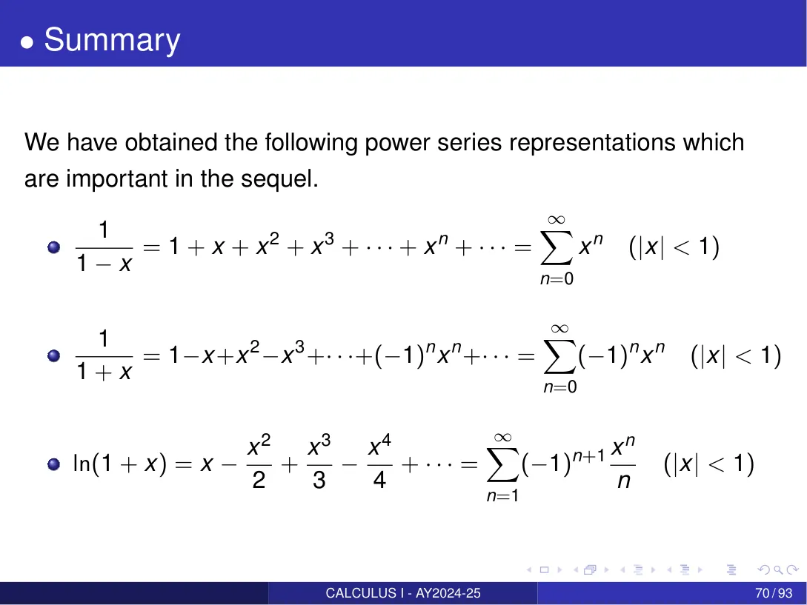
Three series to remember, all valid for $|x|<1$: $\frac1{1-x}=\sum_{n=0}^\infty x^n=1+x+x^2+\cdots$; $\frac1{1+x}=\sum_{n=0}^\infty(-1)^nx^n=1-x+x^2-\cdots$; $\ln(1+x)=\sum_{n=1}^\infty(-1)^{n+1}\frac{x^n}n=x-\frac{x^2}2+\frac{x^3}3-\cdots$. They are the building blocks: substituting $x\to-x$, $x\to x^2$, differentiating and integrating produce many others.
Ba chuỗi cần nhớ, đều đúng với $|x|<1$: $\frac1{1-x}=\sum_{n=0}^\infty x^n=1+x+x^2+\cdots$; $\frac1{1+x}=\sum_{n=0}^\infty(-1)^nx^n=1-x+x^2-\cdots$; $\ln(1+x)=\sum_{n=1}^\infty(-1)^{n+1}\frac{x^n}n=x-\frac{x^2}2+\frac{x^3}3-\cdots$. Chúng là các viên gạch: phép thay $x\to-x$, $x\to x^2$, đạo hàm và tích phân tạo ra nhiều chuỗi khác.
A standard exam question gives a function like $\frac1{1+x^2}$ or $\frac x{1-x}$ and asks for its power series: it is solved by substituting into these three.
Câu hỏi thi chuẩn cho một hàm như $\frac1{1+x^2}$ hoặc $\frac x{1-x}$ và hỏi chuỗi lũy thừa: được giải bằng cách thay vào ba chuỗi này.
Find the power series of $\dfrac{x}{1-x^2}$ and state where it is valid.
Tìm chuỗi lũy thừa của $\dfrac{x}{1-x^2}$ và nêu miền đúng.
Answer and solution · Đáp án và lời giải
Answer · Đáp án: $\sum_{n=0}^\infty x^{2n+1}=x+x^3+x^5+\cdots$, valid for $|x|<1$
Substitute $x\to x^2$ in $\frac1{1-x}=\sum x^n$: $\frac1{1-x^2}=\sum x^{2n}$, valid when $|x^2|<1$, i.e. $|x|<1$. Multiply by $x$: $\sum_{n=0}^\infty x^{2n+1}$.
Thay $x\to x^2$ trong $\frac1{1-x}=\sum x^n$: $\frac1{1-x^2}=\sum x^{2n}$, đúng khi $|x^2|<1$, tức $|x|<1$. Nhân với $x$: $\sum_{n=0}^\infty x^{2n+1}$.
Power series representation theorem · Định lý biểu diễn bằng chuỗi lũy thừa
★★★ Core · Cốt lõi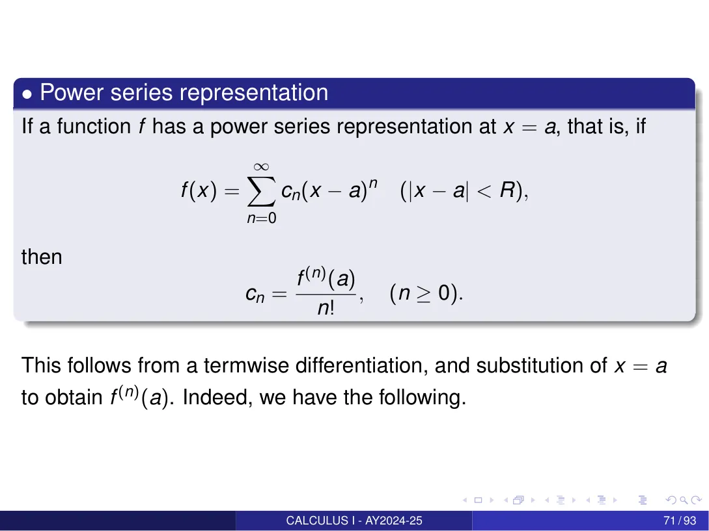
Theorem. If $f$ has a power series representation at $x=a$, $f(x)=\sum_{n=0}^\infty c_n(x-a)^n$ for $|x-a|<R$, then the coefficients are forced: $c_n=\frac{f^{(n)}(a)}{n!}$ for $n\ge0$. So a function has at most one power series at $a$, and it can be computed from the derivatives. The proof is by termwise differentiation and substitution of $x=a$ (next slide).
Định lý. Nếu $f$ có biểu diễn chuỗi lũy thừa tại $x=a$, $f(x)=\sum_{n=0}^\infty c_n(x-a)^n$ với $|x-a|<R$, thì các hệ số bị xác định: $c_n=\frac{f^{(n)}(a)}{n!}$ với $n\ge0$. Vậy một hàm có nhiều nhất một chuỗi lũy thừa tại $a$, và có thể tính từ các đạo hàm. Chứng minh bằng đạo hàm từng số hạng và thay $x=a$ (slide sau).
Why $c_n=\frac{f^{(n)}(a)}{n!}$ · Vì sao $c_n=\frac{f^{(n)}(a)}{n!}$
★★★ Core · Cốt lõi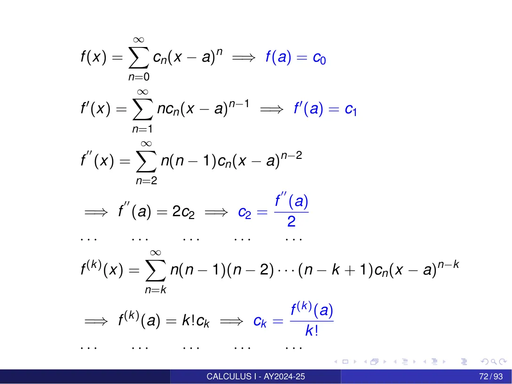
$f(a)=c_0$. Differentiating, $f'(x)=\sum nc_n(x-a)^{n-1}$ gives $f'(a)=c_1$. Again, $f''(x)=\sum n(n-1)c_n(x-a)^{n-2}$ gives $f''(a)=2c_2$, so $c_2=\frac{f''(a)}2$. After $k$ differentiations $f^{(k)}(a)=k!\,c_k$, since the only surviving term at $x=a$ is the one with $(x-a)^0$. Hence $c_k=\frac{f^{(k)}(a)}{k!}$.
$f(a)=c_0$. Đạo hàm, $f'(x)=\sum nc_n(x-a)^{n-1}$ cho $f'(a)=c_1$. Lần nữa, $f''(x)=\sum n(n-1)c_n(x-a)^{n-2}$ cho $f''(a)=2c_2$, nên $c_2=\frac{f''(a)}2$. Sau $k$ lần đạo hàm $f^{(k)}(a)=k!\,c_k$, vì số hạng duy nhất còn lại tại $x=a$ là số hạng có $(x-a)^0$. Do đó $c_k=\frac{f^{(k)}(a)}{k!}$.
A function has $f(x)=\sum c_nx^n$ with $f(0)=2$, $f'(0)=-1$, $f''(0)=6$, $f'''(0)=12$. Find $c_0,c_1,c_2,c_3$.
Một hàm có $f(x)=\sum c_nx^n$ với $f(0)=2$, $f'(0)=-1$, $f''(0)=6$, $f'''(0)=12$. Tìm $c_0,c_1,c_2,c_3$.
Answer and solution · Đáp án và lời giải
Answer · Đáp án: $c_0=2$, $c_1=-1$, $c_2=3$, $c_3=2$
$c_n=\frac{f^{(n)}(0)}{n!}$: $c_0=2$, $c_1=-1$, $c_2=\frac6{2!}=3$, $c_3=\frac{12}{3!}=2$.
$c_n=\frac{f^{(n)}(0)}{n!}$: $c_0=2$, $c_1=-1$, $c_2=\frac6{2!}=3$, $c_3=\frac{12}{3!}=2$.
Taylor series · Chuỗi Taylor
★★★ Core · Cốt lõi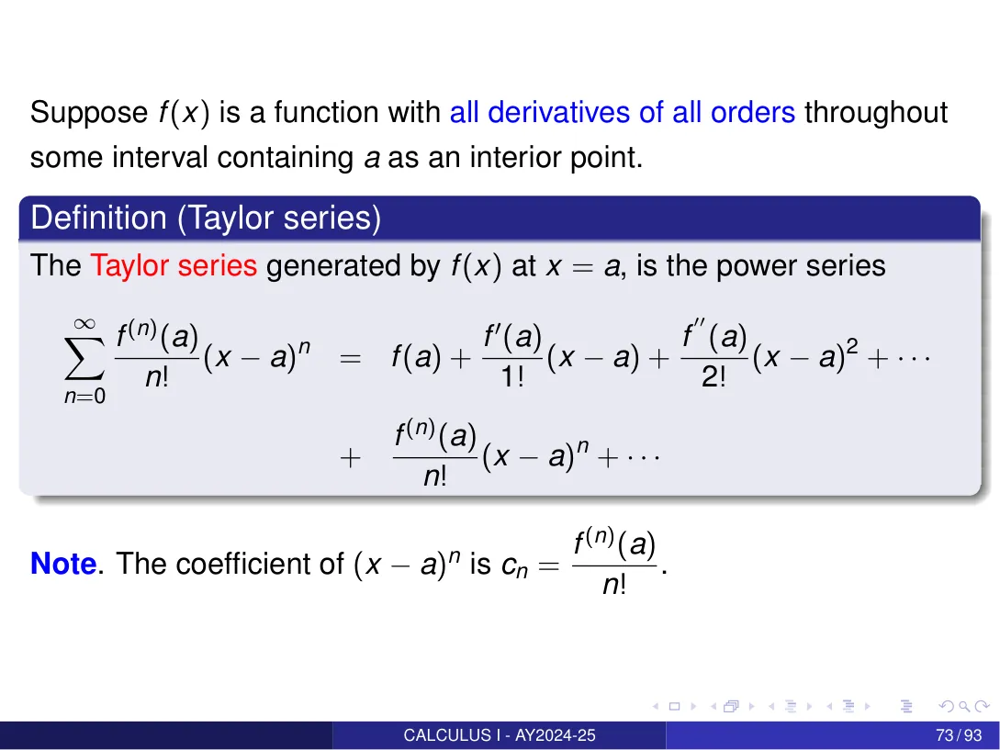
Suppose $f$ has derivatives of all orders on an interval containing $a$ in its interior. The Taylor series generated by $f$ at $x=a$ is $\sum_{n=0}^\infty\frac{f^{(n)}(a)}{n!}(x-a)^n=f(a)+\frac{f'(a)}{1!}(x-a)+\frac{f''(a)}{2!}(x-a)^2+\cdots$. The coefficient of $(x-a)^n$ is $c_n=\frac{f^{(n)}(a)}{n!}$. It is a series we can always write down; whether it converges to $f$ is another matter.
Giả sử $f$ có đạo hàm mọi cấp trên một khoảng chứa $a$ ở bên trong. Chuỗi Taylor sinh bởi $f$ tại $x=a$ là $\sum_{n=0}^\infty\frac{f^{(n)}(a)}{n!}(x-a)^n=f(a)+\frac{f'(a)}{1!}(x-a)+\frac{f''(a)}{2!}(x-a)^2+\cdots$. Hệ số của $(x-a)^n$ là $c_n=\frac{f^{(n)}(a)}{n!}$. Đó là chuỗi ta luôn viết ra được; nó có hội tụ về $f$ hay không là chuyện khác.
Find the Taylor series of $\ln x$ at $a=1$.
Tìm chuỗi Taylor của $\ln x$ tại $a=1$.
Answer and solution · Đáp án và lời giải
Answer · Đáp án: $\sum_{n=1}^\infty\dfrac{(-1)^{n+1}}n(x-1)^n=(x-1)-\dfrac{(x-1)^2}2+\dfrac{(x-1)^3}3-\cdots$
$f=\ln x$, $f'=\frac1x$, $f''=-\frac1{x^2}$, $f'''=\frac2{x^3}$, and $f^{(n)}(x)=\frac{(-1)^{n+1}(n-1)!}{x^n}$, so $f^{(n)}(1)=(-1)^{n+1}(n-1)!$ and $c_n=\frac{(-1)^{n+1}(n-1)!}{n!}=\frac{(-1)^{n+1}}n$ for $n\ge1$, with $c_0=\ln1=0$.
$f=\ln x$, $f'=\frac1x$, $f''=-\frac1{x^2}$, $f'''=\frac2{x^3}$, và $f^{(n)}(x)=\frac{(-1)^{n+1}(n-1)!}{x^n}$, nên $f^{(n)}(1)=(-1)^{n+1}(n-1)!$ và $c_n=\frac{(-1)^{n+1}(n-1)!}{n!}=\frac{(-1)^{n+1}}n$ với $n\ge1$, còn $c_0=\ln1=0$.
Maclaurin series · Chuỗi Maclaurin
★★★ Core · Cốt lõi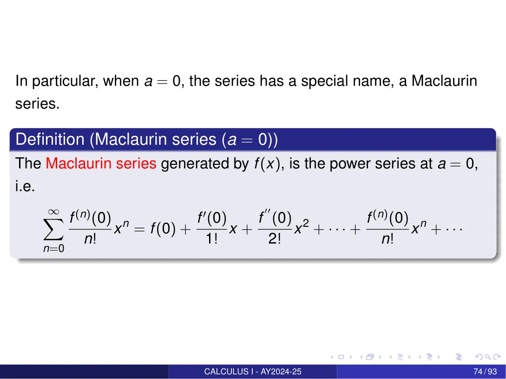
The Taylor series at $a=0$ has a special name, the Maclaurin series: $\sum_{n=0}^\infty\frac{f^{(n)}(0)}{n!}x^n=f(0)+\frac{f'(0)}{1!}x+\frac{f''(0)}{2!}x^2+\cdots+\frac{f^{(n)}(0)}{n!}x^n+\cdots$.
Chuỗi Taylor tại $a=0$ có tên riêng là chuỗi Maclaurin: $\sum_{n=0}^\infty\frac{f^{(n)}(0)}{n!}x^n=f(0)+\frac{f'(0)}{1!}x+\frac{f''(0)}{2!}x^2+\cdots+\frac{f^{(n)}(0)}{n!}x^n+\cdots$.
Find the Maclaurin series of $\cos x$ up to $x^6$ and of $\sin x$ up to $x^5$.
Tìm chuỗi Maclaurin của $\cos x$ đến $x^6$ và của $\sin x$ đến $x^5$.
Answer and solution · Đáp án và lời giải
Answer · Đáp án: $1-\dfrac{x^2}2+\dfrac{x^4}{24}-\dfrac{x^6}{720}$ and $x-\dfrac{x^3}6+\dfrac{x^5}{120}$
Derivatives of $\cos x$ at $0$ cycle $1,0,-1,0,1,0,-1$; divide by $n!$: $1,0,-\frac12,0,\frac1{24},0,-\frac1{720}$. For $\sin x$ they cycle $0,1,0,-1,0,1$: coefficients $0,1,0,-\frac16,0,\frac1{120}$.
Đạo hàm của $\cos x$ tại $0$ lặp $1,0,-1,0,1,0,-1$; chia cho $n!$: $1,0,-\frac12,0,\frac1{24},0,-\frac1{720}$. Với $\sin x$ chúng lặp $0,1,0,-1,0,1$: hệ số $0,1,0,-\frac16,0,\frac1{120}$.
Example: the Taylor series of $\frac1x$ at $a=3$ · Ví dụ: chuỗi Taylor của $\frac1x$ tại $a=3$
★★★ Core · Cốt lõi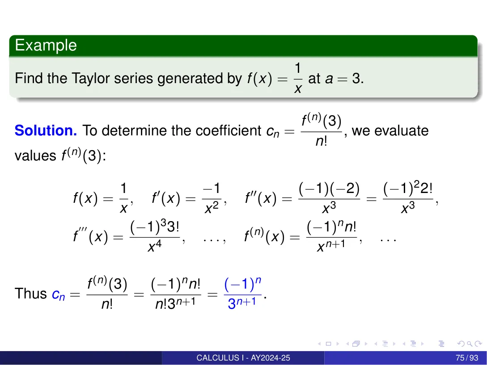
$f(x)=\frac1x$, $f'=-\frac1{x^2}$, $f''=\frac{2}{x^3}$, $f'''=-\frac{3!}{x^4}$, and in general $f^{(n)}(x)=\frac{(-1)^nn!}{x^{n+1}}$. Therefore $c_n=\frac{f^{(n)}(3)}{n!}=\frac{(-1)^nn!}{n!\,3^{n+1}}=\frac{(-1)^n}{3^{n+1}}$. Spot the pattern in the derivatives first, then divide by $n!$: the factorials cancel.
$f(x)=\frac1x$, $f'=-\frac1{x^2}$, $f''=\frac{2}{x^3}$, $f'''=-\frac{3!}{x^4}$, và tổng quát $f^{(n)}(x)=\frac{(-1)^nn!}{x^{n+1}}$. Do đó $c_n=\frac{f^{(n)}(3)}{n!}=\frac{(-1)^nn!}{n!\,3^{n+1}}=\frac{(-1)^n}{3^{n+1}}$. Hãy tìm quy luật của các đạo hàm trước, rồi chia cho $n!$: giai thừa triệt tiêu.
Find the Taylor series of $\frac1x$ at $a=1$ and of $e^x$ at $a=2$ (first four terms).
Tìm chuỗi Taylor của $\frac1x$ tại $a=1$ và của $e^x$ tại $a=2$ (bốn số hạng đầu).
Answer and solution · Đáp án và lời giải
Answer · Đáp án: $1-(x-1)+(x-1)^2-(x-1)^3+\cdots$ and $e^2\left[1+(x-2)+\frac{(x-2)^2}2+\frac{(x-2)^3}6+\cdots\right]$
For $\frac1x$ at $1$: $f^{(n)}(1)=(-1)^nn!$, so $c_n=(-1)^n$. For $e^x$ at $2$: every derivative is $e^x$, so $f^{(n)}(2)=e^2$ and $c_n=\frac{e^2}{n!}$.
Với $\frac1x$ tại $1$: $f^{(n)}(1)=(-1)^nn!$ nên $c_n=(-1)^n$. Với $e^x$ tại $2$: mọi đạo hàm đều là $e^x$ nên $f^{(n)}(2)=e^2$ và $c_n=\frac{e^2}{n!}$.
The series of $\frac1x$ at $3$ is geometric · Chuỗi của $\frac1x$ tại $3$ là hình học
★★★ Core · Cốt lõi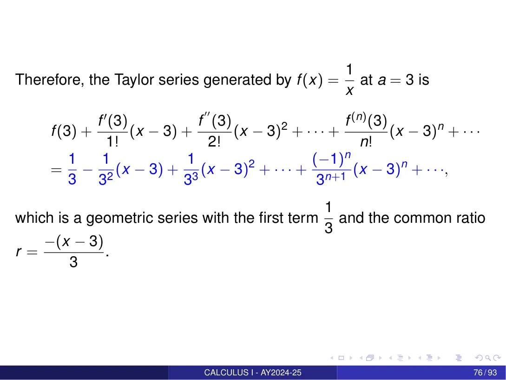
So the Taylor series of $\frac1x$ at $a=3$ is $\frac13-\frac1{3^2}(x-3)+\frac1{3^3}(x-3)^2-\cdots+\frac{(-1)^n}{3^{n+1}}(x-3)^n+\cdots$. This is a geometric series with first term $\frac13$ and common ratio $r=-\frac{x-3}3$, which is why we can sum it exactly.
Vậy chuỗi Taylor của $\frac1x$ tại $a=3$ là $\frac13-\frac1{3^2}(x-3)+\frac1{3^3}(x-3)^2-\cdots+\frac{(-1)^n}{3^{n+1}}(x-3)^n+\cdots$. Đây là chuỗi hình học với số hạng đầu $\frac13$ và công bội $r=-\frac{x-3}3$, nên ta tính được tổng chính xác.
It converges to $\frac1x$ for $|x-3|<3$ · Nó hội tụ về $\frac1x$ khi $|x-3|<3$
★★★ Core · Cốt lõi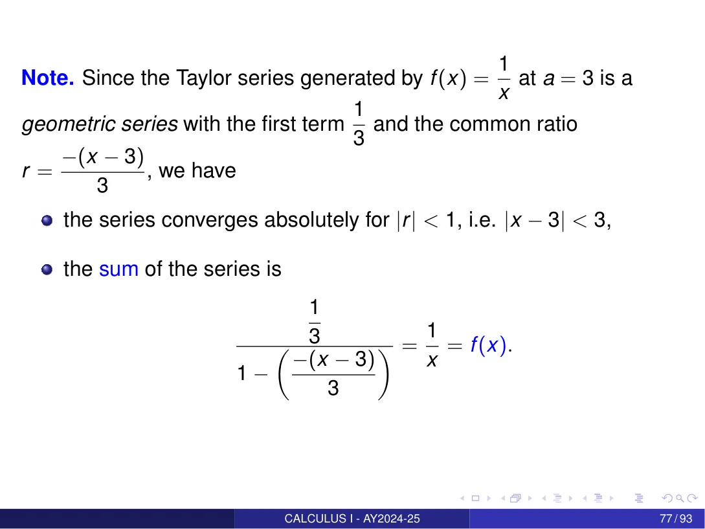
The geometric series converges absolutely when $|r|<1$, i.e. $|x-3|<3$, and its sum is $\frac{1/3}{1-\left(-\frac{x-3}3\right)}=\frac{1/3}{x/3}=\frac1x=f(x)$. So on $(0,6)$ the Taylor series really equals the function. The interval stops exactly at $x=0$, where $f$ has its vertical asymptote: for these examples the radius of convergence is the distance from the centre to the nearest singularity (in general singularities may be complex: $\frac1{1+x^2}$ has $R=1$ at $0$ because of $x=\pm i$).
Chuỗi hình học hội tụ tuyệt đối khi $|r|<1$, tức $|x-3|<3$, và tổng là $\frac{1/3}{1-\left(-\frac{x-3}3\right)}=\frac{1/3}{x/3}=\frac1x=f(x)$. Vậy trên $(0,6)$ chuỗi Taylor thực sự bằng hàm. Khoảng dừng đúng ở $x=0$, nơi $f$ có tiệm cận đứng: với các ví dụ này bán kính hội tụ là khoảng cách từ tâm đến điểm kỳ dị gần nhất (tổng quát các điểm kỳ dị có thể là số phức: $\frac1{1+x^2}$ có $R=1$ tại $0$ do $x=\pm i$).
Check the slide's sum: show $\dfrac{1/3}{1-\left(-\frac{x-3}3\right)}=\dfrac1x$, and find the radius of convergence of the Taylor series of $\ln x$ at $a=1$ without computing.
Kiểm tra tổng ở slide: chứng tỏ $\dfrac{1/3}{1-\left(-\frac{x-3}3\right)}=\dfrac1x$, và tìm bán kính hội tụ của chuỗi Taylor của $\ln x$ tại $a=1$ mà không cần tính.
Answer and solution · Đáp án và lời giải
Answer · Đáp án: equality holds; $R=1$ (distance from $1$ to the singularity at $0$)
$1+\frac{x-3}3=\frac{3+x-3}3=\frac x3$, so $\frac{1/3}{x/3}=\frac1x$. For $\ln x$ at $1$ the nearest singularity is $x=0$, at distance $1$, so $R=1$, consistent with the interval $(0,2)$; indeed the series $\sum\frac{(-1)^{n+1}}n(x-1)^n$ has ratio of coefficients tending to $1$.
$1+\frac{x-3}3=\frac{3+x-3}3=\frac x3$ nên $\frac{1/3}{x/3}=\frac1x$. Với $\ln x$ tại $1$ điểm kỳ dị gần nhất là $x=0$, cách $1$ một đơn vị, nên $R=1$, khớp với khoảng $(0,2)$; thật vậy chuỗi $\sum\frac{(-1)^{n+1}}n(x-1)^n$ có tỉ số hệ số tiến về $1$.
Important remarks on Taylor series · Những nhận xét quan trọng về chuỗi Taylor
★★★ Core · Cốt lõi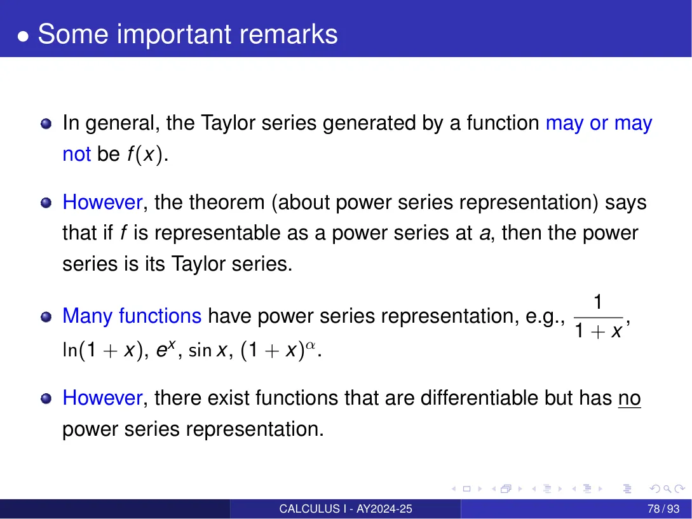
In general the Taylor series generated by a function may or may not equal $f(x)$. But if $f$ is representable by a power series at $a$, that series is its Taylor series. Many functions are representable: $\frac1{1+x}$, $\ln(1+x)$, $e^x$, $\sin x$, $(1+x)^\alpha$. However there exist differentiable functions with no power series representation, for instance $f(x)=e^{-1/x^2}$ ($f(0)=0$): all its derivatives at $0$ are $0$, so its Maclaurin series is identically $0$ although $f(x)>0$ for $x\ne0$.
Nói chung chuỗi Taylor sinh bởi một hàm có thể bằng hoặc không bằng $f(x)$. Nhưng nếu $f$ biểu diễn được bằng chuỗi lũy thừa tại $a$ thì chuỗi đó chính là chuỗi Taylor của nó. Nhiều hàm biểu diễn được: $\frac1{1+x}$, $\ln(1+x)$, $e^x$, $\sin x$, $(1+x)^\alpha$. Tuy nhiên có những hàm khả vi không có biểu diễn chuỗi lũy thừa, ví dụ $f(x)=e^{-1/x^2}$ ($f(0)=0$): mọi đạo hàm của nó tại $0$ đều bằng $0$, nên chuỗi Maclaurin của nó đồng nhất bằng $0$ dù $f(x)>0$ với $x\ne0$.
For $f(x)=e^{-1/x^2}$ ($f(0)=0$) show numerically that $\frac{f(x)}{x^{10}}\to0$ as $x\to0$ (so $f$ is flatter than any power), and that $f(0.5)\ne0$.
Với $f(x)=e^{-1/x^2}$ ($f(0)=0$) chứng tỏ bằng số rằng $\frac{f(x)}{x^{10}}\to0$ khi $x\to0$ (nên $f$ phẳng hơn mọi lũy thừa), và $f(0.5)\ne0$.
Answer and solution · Đáp án và lời giải
Answer · Đáp án: $\lim=0$ and $f(0.5)=e^{-4}\approx0.0183$
Put $u=\frac1{x^2}\to\infty$: $\frac{e^{-1/x^2}}{x^{10}}=u^5e^{-u}\to0$, because the exponential beats every power. The same happens for every power of $x$, which makes all derivatives vanish at $0$. But $f(0.5)=e^{-4}\approx0.018>0$, so the zero Maclaurin series does not represent $f$.
Đặt $u=\frac1{x^2}\to\infty$: $\frac{e^{-1/x^2}}{x^{10}}=u^5e^{-u}\to0$, vì hàm mũ thắng mọi lũy thừa. Điều tương tự xảy ra với mọi lũy thừa của $x$, làm mọi đạo hàm triệt tiêu tại $0$. Nhưng $f(0.5)=e^{-4}\approx0.018>0$ nên chuỗi Maclaurin bằng không không biểu diễn $f$.
Taylor polynomials · Đa thức Taylor
★★★ Core · Cốt lõi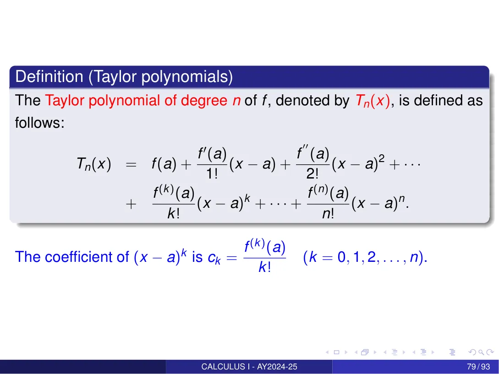
The Taylor polynomial of degree $n$ of $f$ at $a$ is the partial sum $T_n(x)=f(a)+\frac{f'(a)}{1!}(x-a)+\frac{f''(a)}{2!}(x-a)^2+\cdots+\frac{f^{(n)}(a)}{n!}(x-a)^n$, with coefficient $c_k=\frac{f^{(k)}(a)}{k!}$ of $(x-a)^k$ for $k=0,\dots,n$. It is a genuine polynomial, so it can be evaluated with arithmetic only.
Đa thức Taylor bậc $n$ của $f$ tại $a$ là tổng riêng $T_n(x)=f(a)+\frac{f'(a)}{1!}(x-a)+\frac{f''(a)}{2!}(x-a)^2+\cdots+\frac{f^{(n)}(a)}{n!}(x-a)^n$, với hệ số $c_k=\frac{f^{(k)}(a)}{k!}$ của $(x-a)^k$ với $k=0,\dots,n$. Nó là đa thức thực sự nên có thể tính chỉ bằng phép toán số học.
Find $T_3(x)$ for $f(x)=\sqrt x$ at $a=4$.
Tìm $T_3(x)$ cho $f(x)=\sqrt x$ tại $a=4$.
Answer and solution · Đáp án và lời giải
Answer · Đáp án: $2+\dfrac{x-4}4-\dfrac{(x-4)^2}{64}+\dfrac{(x-4)^3}{512}$
$f(4)=2$; $f'=\frac1{2\sqrt x}=\frac14$; $f''=-\frac1{4x^{3/2}}=-\frac1{32}$; $f'''=\frac3{8x^{5/2}}=\frac3{256}$. Coefficients: $2$, $\frac14$, $-\frac1{32\cdot2}=-\frac1{64}$, $\frac3{256\cdot6}=\frac1{512}$.
$f(4)=2$; $f'=\frac1{2\sqrt x}=\frac14$; $f''=-\frac1{4x^{3/2}}=-\frac1{32}$; $f'''=\frac3{8x^{5/2}}=\frac3{256}$. Hệ số: $2$, $\frac14$, $-\frac1{32\cdot2}=-\frac1{64}$, $\frac3{256\cdot6}=\frac1{512}$.
Properties of Taylor polynomials · Tính chất của đa thức Taylor
★★★ Core · Cốt lõi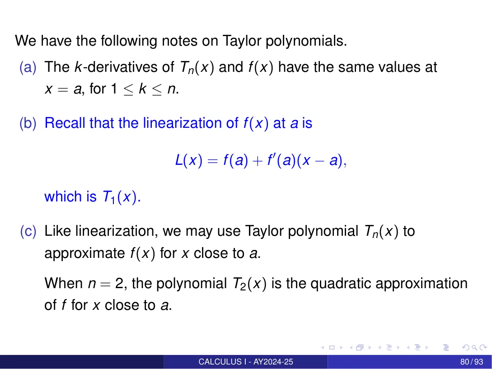
(a) $T_n$ and $f$ have the same value and the same derivatives up to order $n$ at $x=a$. (b) The linearization of $f$ at $a$, $L(x)=f(a)+f'(a)(x-a)$, is $T_1(x)$. (c) Like linearization, $T_n(x)$ approximates $f(x)$ for $x$ near $a$; for $n=2$, $T_2$ is the quadratic approximation. The figure of slide 39 shows $e^x$ with $T_1,T_2,T_3$ at $0$: each extra degree stays close to the curve longer.
(a) $T_n$ và $f$ có cùng giá trị và cùng đạo hàm đến cấp $n$ tại $x=a$. (b) Tuyến tính hóa của $f$ tại $a$, $L(x)=f(a)+f'(a)(x-a)$, chính là $T_1(x)$. (c) Như tuyến tính hóa, $T_n(x)$ xấp xỉ $f(x)$ khi $x$ gần $a$; với $n=2$, $T_2$ là xấp xỉ bậc hai. Hình ở slide 39 cho thấy $e^x$ với $T_1,T_2,T_3$ tại $0$: mỗi bậc thêm bám sát đường cong lâu hơn.
With $T_1$ and $T_2$ of $\sqrt x$ at $a=4$ estimate $\sqrt{4.1}$ and compare with the exact value.
Dùng $T_1$ và $T_2$ của $\sqrt x$ tại $a=4$ ước lượng $\sqrt{4.1}$ và so với giá trị chính xác.
Answer and solution · Đáp án và lời giải
Answer · Đáp án: $T_1=2.025$, $T_2=2.0248438$; exact $2.0248457$
$T_1(4.1)=2+\frac{0.1}4=2.025$ (the linearization). $T_2(4.1)=2.025-\frac{0.01}{64}=2.0248438$. Exact $\sqrt{4.1}=2.0248457$: the error drops from $1.5\times10^{-4}$ to $1.9\times10^{-6}$.
$T_1(4.1)=2+\frac{0.1}4=2.025$ (tuyến tính hóa). $T_2(4.1)=2.025-\frac{0.01}{64}=2.0248438$. Chính xác $\sqrt{4.1}=2.0248457$: sai số giảm từ $1.5\times10^{-4}$ xuống $1.9\times10^{-6}$.
The Taylor remainder formula · Công thức phần dư Taylor
★★★ Core · Cốt lõi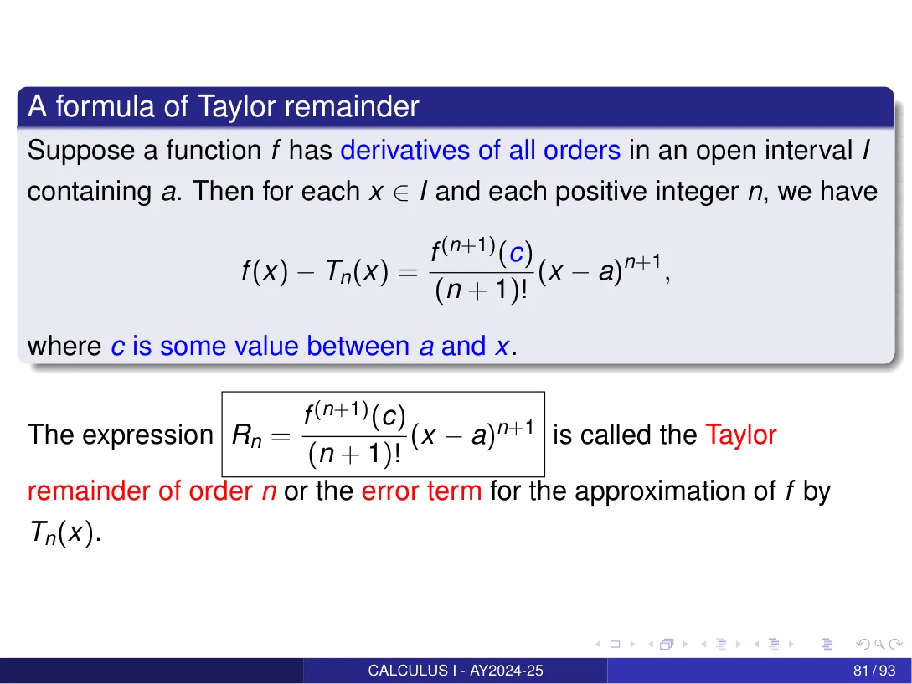
Formula. If $f$ has derivatives of all orders on an open interval $I$ containing $a$, then for each $x\in I$ and each positive integer $n$: $f(x)-T_n(x)=\frac{f^{(n+1)}(c)}{(n+1)!}(x-a)^{n+1}$ for some $c$ between $a$ and $x$. The right side $R_n(x)$ is the Taylor remainder of order $n$, the error of approximating $f$ by $T_n$. It looks like the next term of the series, but with the derivative taken at an unknown point $c$.
Công thức. Nếu $f$ có đạo hàm mọi cấp trên khoảng mở $I$ chứa $a$, thì với mỗi $x\in I$ và mỗi số nguyên dương $n$: $f(x)-T_n(x)=\frac{f^{(n+1)}(c)}{(n+1)!}(x-a)^{n+1}$ với một $c$ nào đó nằm giữa $a$ và $x$. Vế phải $R_n(x)$ là phần dư Taylor cấp $n$, sai số khi xấp xỉ $f$ bằng $T_n$. Nó giống số hạng kế tiếp của chuỗi, nhưng với đạo hàm lấy tại một điểm $c$ chưa biết.
The remainder turns Taylor polynomials from a heuristic into a method with a guaranteed error bound.
Phần dư biến đa thức Taylor từ một cách làm kinh nghiệm thành một phương pháp có cận sai số được đảm bảo.
Write the remainder $R_2(x)$ for $f(x)=\sqrt x$ at $a=4$ and bound $|R_2(4.1)|$.
Viết phần dư $R_2(x)$ cho $f(x)=\sqrt x$ tại $a=4$ và chặn $|R_2(4.1)|$.
Answer and solution · Đáp án và lời giải
Answer · Đáp án: $|R_2(4.1)|<\dfrac{0.001}{512}\approx1.95\times10^{-6}$
$R_2(x)=\frac{f'''(c)}{3!}(x-4)^3$ with $f'''(c)=\frac3{8c^{5/2}}$. For $c\in(4,4.1)$, $c^{5/2}>4^{5/2}=32$, so $f'''(c)<\frac3{8\cdot32}=\frac3{256}$ and $|R_2(4.1)|<\frac{3/256}{6}\cdot0.1^3=\frac{0.001}{512}\approx2\times10^{-6}$. The actual error is $1.9\times10^{-6}$, inside the bound.
$R_2(x)=\frac{f'''(c)}{3!}(x-4)^3$ với $f'''(c)=\frac3{8c^{5/2}}$. Với $c\in(4,4.1)$, $c^{5/2}>4^{5/2}=32$ nên $f'''(c)<\frac3{8\cdot32}=\frac3{256}$ và $|R_2(4.1)|<\frac{3/256}{6}\cdot0.1^3=\frac{0.001}{512}\approx2\times10^{-6}$. Sai số thực là $1.9\times10^{-6}$, nằm trong cận.
$f=T_n+R_n$ · $f=T_n+R_n$
★★★ Core · Cốt lõi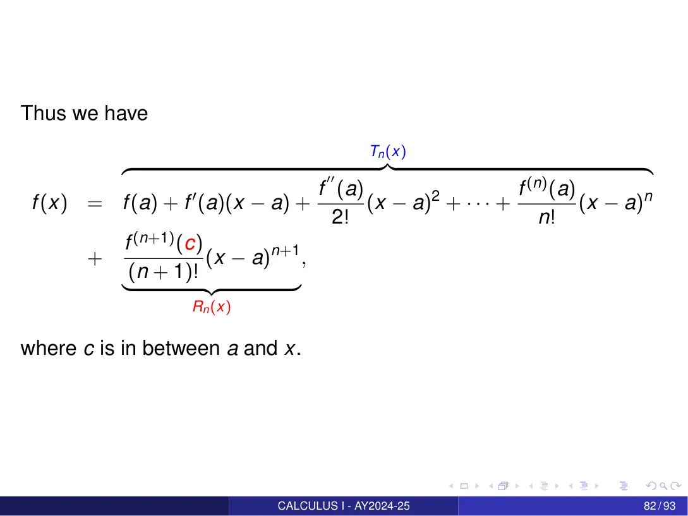
Putting the two together: $f(x)=\underbrace{f(a)+f'(a)(x-a)+\cdots+\frac{f^{(n)}(a)}{n!}(x-a)^n}_{T_n(x)}+\underbrace{\frac{f^{(n+1)}(c)}{(n+1)!}(x-a)^{n+1}}_{R_n(x)}$, where $c$ is between $a$ and $x$. The three applications that follow all use this identity: convergence, error estimation and number of terms.
Gộp hai phần: $f(x)=\underbrace{f(a)+f'(a)(x-a)+\cdots+\frac{f^{(n)}(a)}{n!}(x-a)^n}_{T_n(x)}+\underbrace{\frac{f^{(n+1)}(c)}{(n+1)!}(x-a)^{n+1}}_{R_n(x)}$, với $c$ nằm giữa $a$ và $x$. Ba ứng dụng tiếp theo đều dùng đồng nhất thức này: hội tụ, ước lượng sai số và số số hạng.
Application 1: convergence of the Taylor series to $f$ · Ứng dụng 1: sự hội tụ của chuỗi Taylor về $f$
★★★ Core · Cốt lõi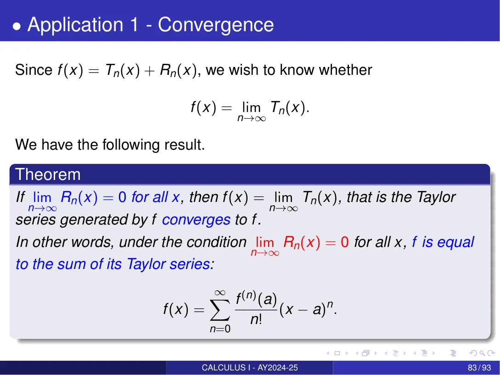
Since $f=T_n+R_n$, we ask whether $f(x)=\lim_{n\to\infty}T_n(x)$. Theorem: if $\lim_{n\to\infty}R_n(x)=0$ for all $x$ in the interval, then the Taylor series generated by $f$ converges to $f$, i.e. $f(x)=\sum_{n=0}^\infty\frac{f^{(n)}(a)}{n!}(x-a)^n$. This is the tool that proves a function equals its Taylor series.
Vì $f=T_n+R_n$, ta hỏi $f(x)=\lim_{n\to\infty}T_n(x)$ có đúng không. Định lý: nếu $\lim_{n\to\infty}R_n(x)=0$ với mọi $x$ trong khoảng thì chuỗi Taylor sinh bởi $f$ hội tụ về $f$, tức $f(x)=\sum_{n=0}^\infty\frac{f^{(n)}(a)}{n!}(x-a)^n$. Đây là công cụ chứng minh một hàm bằng chuỗi Taylor của nó.
Example: $e^x=\sum\frac{x^n}{n!}$, the setup · Ví dụ: $e^x=\sum\frac{x^n}{n!}$, thiết lập
★★★ Core · Cốt lõi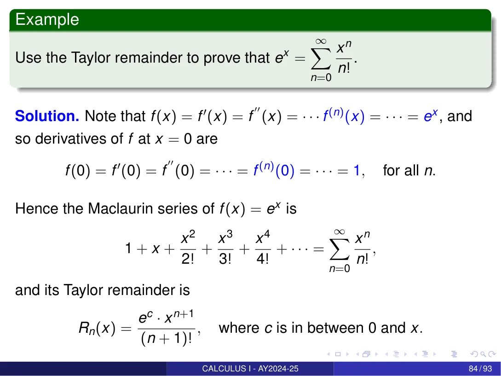
Use the Taylor remainder to prove $e^x=\sum_{n=0}^\infty\frac{x^n}{n!}$. All derivatives of $f(x)=e^x$ equal $e^x$, so at $0$ they are all $1$. The Maclaurin series is $1+x+\frac{x^2}{2!}+\frac{x^3}{3!}+\cdots=\sum\frac{x^n}{n!}$ and the remainder is $R_n(x)=\frac{e^c\,x^{n+1}}{(n+1)!}$ with $c$ between $0$ and $x$.
Dùng phần dư Taylor để chứng minh $e^x=\sum_{n=0}^\infty\frac{x^n}{n!}$. Mọi đạo hàm của $f(x)=e^x$ đều bằng $e^x$ nên tại $0$ đều bằng $1$. Chuỗi Maclaurin là $1+x+\frac{x^2}{2!}+\frac{x^3}{3!}+\cdots=\sum\frac{x^n}{n!}$ và phần dư là $R_n(x)=\frac{e^c\,x^{n+1}}{(n+1)!}$ với $c$ nằm giữa $0$ và $x$.
Showing $R_n(x)\to0$ · Chứng tỏ $R_n(x)\to0$
★★★ Core · Cốt lõi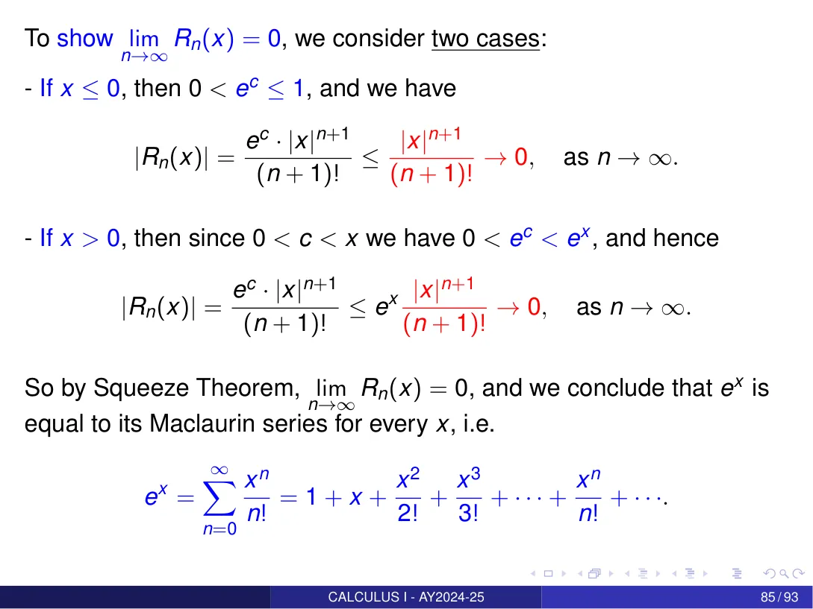
Two cases. If $x\le0$ then $0<e^c\le1$, so $|R_n(x)|\le\frac{|x|^{n+1}}{(n+1)!}$. If $x>0$ then $0<c<x$ gives $0<e^c<e^x$, so $|R_n(x)|\le e^x\frac{|x|^{n+1}}{(n+1)!}$. In both cases $\frac{|x|^{n+1}}{(n+1)!}\to0$, so by the Squeeze Theorem $R_n(x)\to0$ and $e^x$ equals its Maclaurin series for every $x$. The key fact is that factorials grow faster than any exponential: $\frac{|x|^n}{n!}\to0$.
Hai trường hợp. Nếu $x\le0$ thì $0<e^c\le1$ nên $|R_n(x)|\le\frac{|x|^{n+1}}{(n+1)!}$. Nếu $x>0$ thì $0<c<x$ cho $0<e^c<e^x$ nên $|R_n(x)|\le e^x\frac{|x|^{n+1}}{(n+1)!}$. Cả hai trường hợp $\frac{|x|^{n+1}}{(n+1)!}\to0$ nên theo Định lý kẹp $R_n(x)\to0$ và $e^x$ bằng chuỗi Maclaurin của nó với mọi $x$. Sự kiện then chốt là giai thừa tăng nhanh hơn mọi hàm mũ: $\frac{|x|^n}{n!}\to0$.
Show that $\frac{|x|^n}{n!}\to0$ for every fixed $x$ (ratio test on $\sum\frac{|x|^n}{n!}$) and check it numerically for $x=5$, $n=40$.
Chứng tỏ $\frac{|x|^n}{n!}\to0$ với mọi $x$ cố định (tiêu chuẩn tỉ số cho $\sum\frac{|x|^n}{n!}$) và kiểm tra bằng số với $x=5$, $n=40$.
Answer and solution · Đáp án và lời giải
Answer · Đáp án: the ratio is $\frac{|x|}{n+1}\to0$, so the series converges and its terms tend to $0$; $\frac{5^{40}}{40!}\approx1\times10^{-20}$
For $a_n=\frac{|x|^n}{n!}$: $\frac{a_{n+1}}{a_n}=\frac{|x|}{n+1}\to0<1$, so $\sum a_n$ converges and therefore $a_n\to0$ (necessary condition). Numerically $\frac{5^{40}}{40!}=\frac{9.09\times10^{27}}{8.16\times10^{47}}\approx1.1\times10^{-20}$.
Với $a_n=\frac{|x|^n}{n!}$: $\frac{a_{n+1}}{a_n}=\frac{|x|}{n+1}\to0<1$ nên $\sum a_n$ hội tụ và do đó $a_n\to0$ (điều kiện cần). Bằng số $\frac{5^{40}}{40!}=\frac{9.09\times10^{27}}{8.16\times10^{47}}\approx1.1\times10^{-20}$.
Figure: $e^x$ and its Taylor polynomials $T_1,T_2,T_3$ · Hình: $e^x$ và các đa thức Taylor $T_1,T_2,T_3$
★★ Important · Quan trọng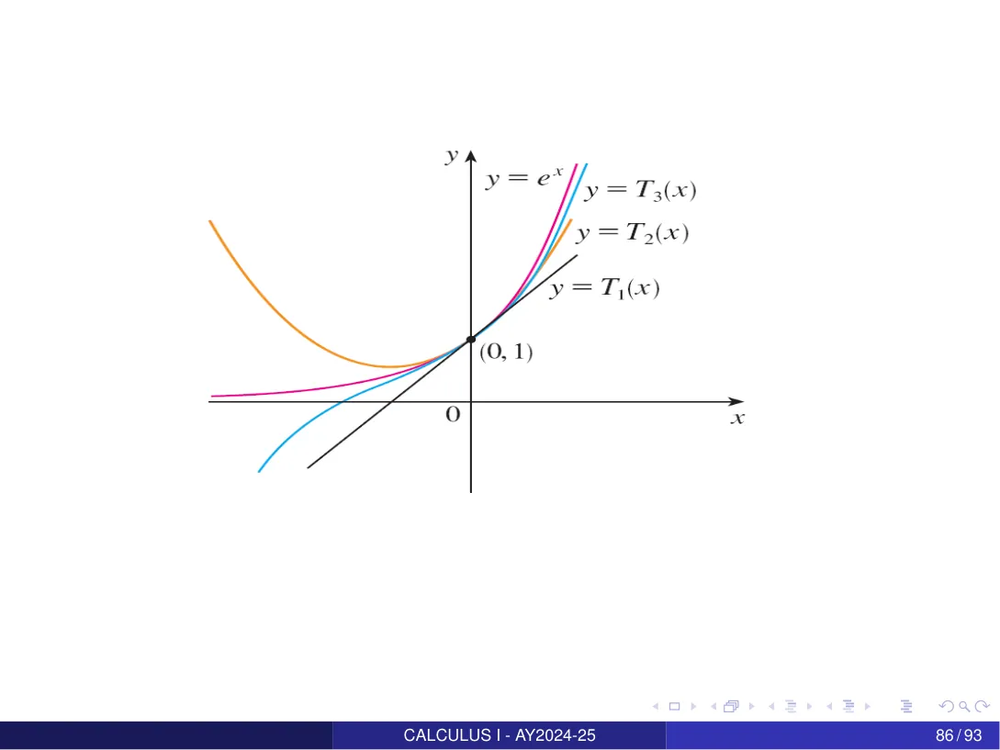
The picture shows $y=e^x$ and its Taylor polynomials at $0$: the tangent line $T_1$, the parabola $T_2$ and the cubic $T_3$, all passing through $(0,1)$. Each higher degree hugs the exponential curve over a wider interval around $0$; far from $0$ all of them leave the curve, which is why the error term matters.
Hình cho thấy $y=e^x$ và các đa thức Taylor tại $0$: tiếp tuyến $T_1$, parabol $T_2$ và đa thức bậc ba $T_3$, tất cả đi qua $(0,1)$. Bậc càng cao càng bám sát đường mũ trên khoảng rộng hơn quanh $0$; xa $0$ tất cả đều rời đường cong, vì vậy số hạng sai số quan trọng.
Application 2: error estimation · Ứng dụng 2: ước lượng sai số
★★★ Core · Cốt lõi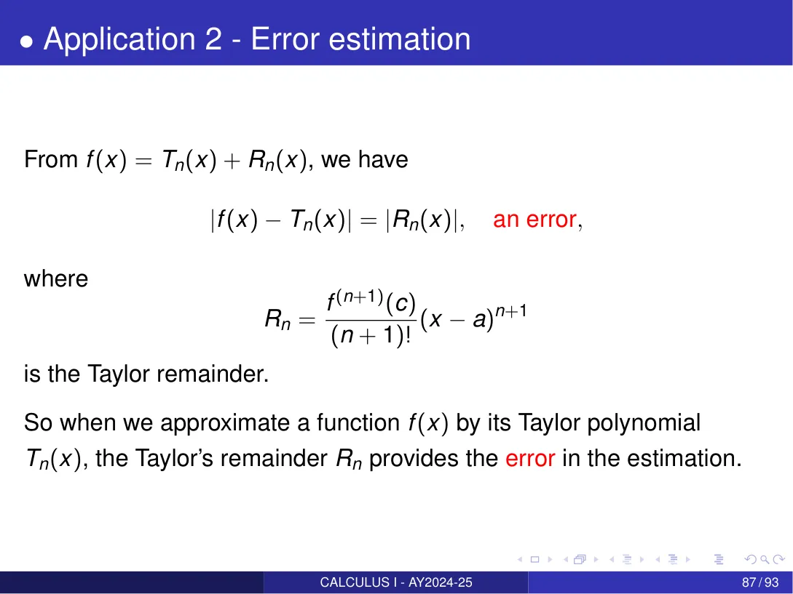
From $f=T_n+R_n$: $|f(x)-T_n(x)|=|R_n(x)|$ is the error when $f$ is replaced by $T_n$, and $R_n=\frac{f^{(n+1)}(c)}{(n+1)!}(x-a)^{n+1}$. So Taylor's remainder gives the error of the estimate. Since $c$ is unknown, we bound $|f^{(n+1)}(c)|$ on the interval between $a$ and $x$ by some number $M$ and write $|R_n|\le\frac M{(n+1)!}|x-a|^{n+1}$.
Từ $f=T_n+R_n$: $|f(x)-T_n(x)|=|R_n(x)|$ là sai số khi thay $f$ bằng $T_n$, và $R_n=\frac{f^{(n+1)}(c)}{(n+1)!}(x-a)^{n+1}$. Vậy phần dư Taylor cho sai số của ước lượng. Vì $c$ chưa biết, ta chặn $|f^{(n+1)}(c)|$ trên khoảng giữa $a$ và $x$ bởi một số $M$ và viết $|R_n|\le\frac M{(n+1)!}|x-a|^{n+1}$.
The three-line template (write $R_n$, bound $f^{(n+1)}(c)$, evaluate) is the standard exam answer to "estimate the error".
Mẫu ba dòng (viết $R_n$, chặn $f^{(n+1)}(c)$, tính) là câu trả lời thi chuẩn cho "ước lượng sai số".
Example: $T_4(0.5)$ for $e^x$ · Ví dụ: $T_4(0.5)$ của $e^x$
★★★ Core · Cốt lõi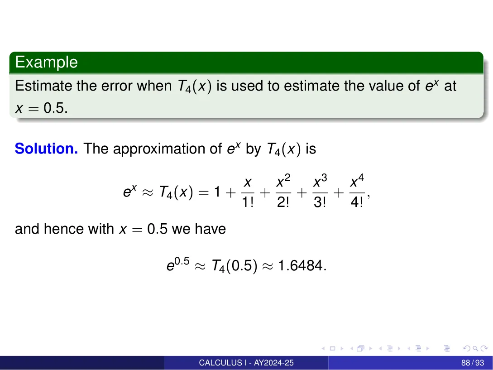
Estimate the error when $T_4(x)$ is used for $e^x$ at $x=0.5$. $e^x\approx T_4(x)=1+x+\frac{x^2}{2!}+\frac{x^3}{3!}+\frac{x^4}{4!}$, so $e^{0.5}\approx T_4(0.5)=1+0.5+0.125+0.0208333+0.0026042\approx1.6484$.
Ước lượng sai số khi dùng $T_4(x)$ cho $e^x$ tại $x=0.5$. $e^x\approx T_4(x)=1+x+\frac{x^2}{2!}+\frac{x^3}{3!}+\frac{x^4}{4!}$, nên $e^{0.5}\approx T_4(0.5)=1+0.5+0.125+0.0208333+0.0026042\approx1.6484$.
The error bound $0.00052$ · Cận sai số $0.00052$
★★★ Core · Cốt lõi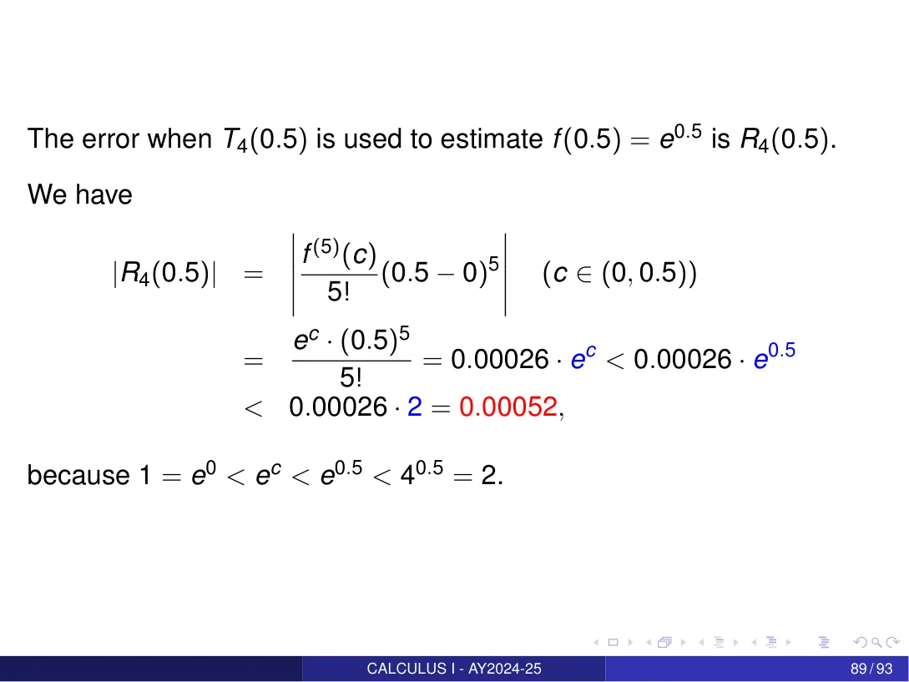
The error is $R_4(0.5)$: $|R_4(0.5)|=\frac{e^c(0.5)^5}{5!}=0.00026\,e^c<0.00026\,e^{0.5}<0.00026\cdot2=0.00052$, because $1=e^0<e^c<e^{0.5}<4^{0.5}=2$ for $c\in(0,0.5)$. (Here we bounded $e^c$ without a calculator by $e<4$.) The true error is $e^{0.5}-T_4(0.5)\approx0.00028$, comfortably inside the bound.
Sai số là $R_4(0.5)$: $|R_4(0.5)|=\frac{e^c(0.5)^5}{5!}=0.00026\,e^c<0.00026\,e^{0.5}<0.00026\cdot2=0.00052$, vì $1=e^0<e^c<e^{0.5}<4^{0.5}=2$ với $c\in(0,0.5)$. (Ở đây ta chặn $e^c$ không cần máy tính bằng $e<4$.) Sai số thực là $e^{0.5}-T_4(0.5)\approx0.00028$, nằm gọn trong cận.
Verify the slide: compute $T_4(0.5)$ exactly as a fraction, the bound $\frac{(0.5)^5}{5!}$, and the true error.
Kiểm tra slide: tính $T_4(0.5)$ chính xác dưới dạng phân số, cận $\frac{(0.5)^5}{5!}$, và sai số thực.
Answer and solution · Đáp án và lời giải
Answer · Đáp án: $T_4(0.5)=\dfrac{211}{128}=1.6484375$; $\dfrac{(0.5)^5}{5!}=\dfrac1{3840}\approx0.00026$; true error $\approx0.00028<0.00052$
$1+\frac12+\frac18+\frac1{48}+\frac1{384}=\frac{384+192+48+8+1}{384}=\frac{633}{384}=\frac{211}{128}$. $\frac{(1/2)^5}{120}=\frac1{3840}=0.000260$. $e^{0.5}=1.6487213$, so the true error is $1.6487213-1.6484375=0.000284$, less than $0.00052$.
$1+\frac12+\frac18+\frac1{48}+\frac1{384}=\frac{384+192+48+8+1}{384}=\frac{633}{384}=\frac{211}{128}$. $\frac{(1/2)^5}{120}=\frac1{3840}=0.000260$. $e^{0.5}=1.6487213$ nên sai số thực là $1.6487213-1.6484375=0.000284$, nhỏ hơn $0.00052$.
Application 3: how many terms are needed · Ứng dụng 3: cần bao nhiêu số hạng
★★★ Core · Cốt lõi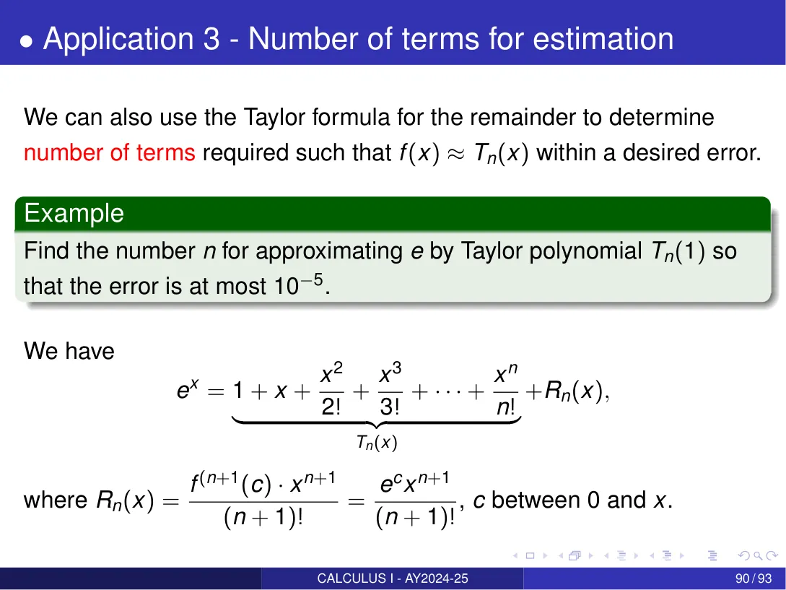
We can also use the remainder formula to find the number of terms needed so that $T_n(x)$ approximates $f(x)$ within a given error. Example: find $n$ such that $T_n(1)$ approximates $e$ with error at most $10^{-5}$. Start from $e^x=T_n(x)+R_n(x)$ with $R_n(x)=\frac{e^c\,x^{n+1}}{(n+1)!}$, $c$ between $0$ and $x$.
Ta cũng có thể dùng công thức phần dư để tìm số số hạng cần có để $T_n(x)$ xấp xỉ $f(x)$ trong một sai số cho trước. Ví dụ: tìm $n$ để $T_n(1)$ xấp xỉ $e$ với sai số không quá $10^{-5}$. Xuất phát từ $e^x=T_n(x)+R_n(x)$ với $R_n(x)=\frac{e^c\,x^{n+1}}{(n+1)!}$, $c$ nằm giữa $0$ và $x$.
The approximation of $e$ and its error · Xấp xỉ $e$ và sai số của nó
★★★ Core · Cốt lõi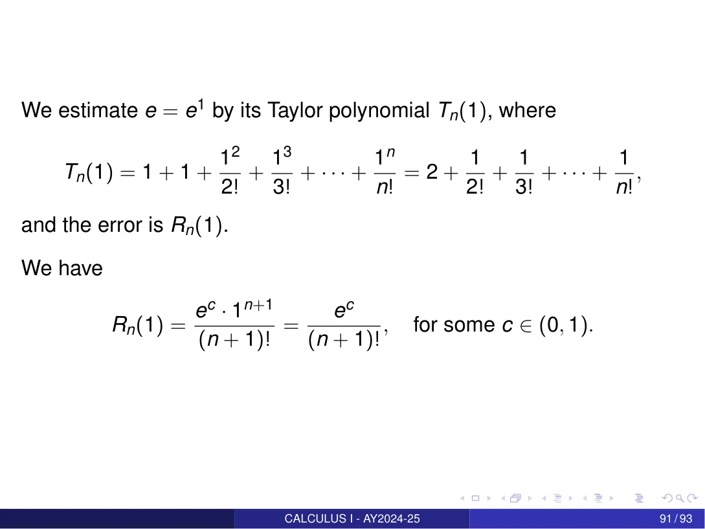
Here $e=e^1\approx T_n(1)=1+1+\frac1{2!}+\frac1{3!}+\cdots+\frac1{n!}=2+\frac1{2!}+\frac1{3!}+\cdots+\frac1{n!}$, and the error is $R_n(1)=\frac{e^c\cdot1^{n+1}}{(n+1)!}=\frac{e^c}{(n+1)!}$ for some $c\in(0,1)$.
Ở đây $e=e^1\approx T_n(1)=1+1+\frac1{2!}+\frac1{3!}+\cdots+\frac1{n!}=2+\frac1{2!}+\frac1{3!}+\cdots+\frac1{n!}$, và sai số là $R_n(1)=\frac{e^c\cdot1^{n+1}}{(n+1)!}=\frac{e^c}{(n+1)!}$ với một $c\in(0,1)$.
Choosing $n$: the answer $n\ge8$ · Chọn $n$: đáp số $n\ge8$
★★★ Core · Cốt lõi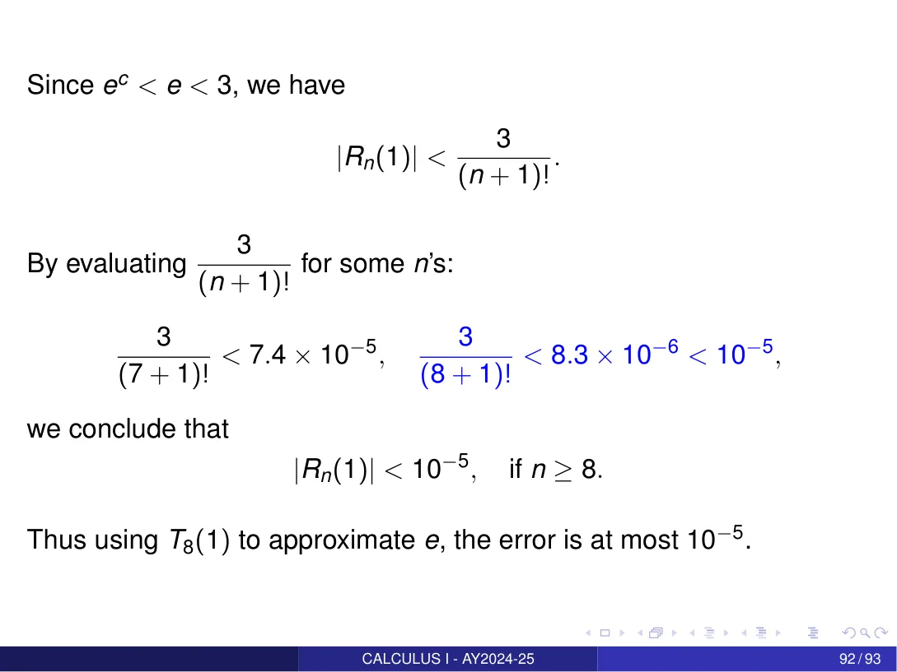
Since $e^c<e<3$, we get $|R_n(1)|<\frac3{(n+1)!}$. Evaluate for some $n$: $\frac3{8!}<7.4\times10^{-5}$ (too big) and $\frac3{9!}<8.3\times10^{-6}<10^{-5}$ (good). So $|R_n(1)|<10^{-5}$ for $n\ge8$, and $T_8(1)$ approximates $e$ with error at most $10^{-5}$. Do not forget the last step: $(n+1)!$ with $n=8$ is $9!$.
Vì $e^c<e<3$, ta có $|R_n(1)|<\frac3{(n+1)!}$. Tính với vài giá trị $n$: $\frac3{8!}<7.4\times10^{-5}$ (quá lớn) và $\frac3{9!}<8.3\times10^{-6}<10^{-5}$ (đạt). Vậy $|R_n(1)|<10^{-5}$ với $n\ge8$, và $T_8(1)$ xấp xỉ $e$ với sai số không quá $10^{-5}$. Đừng quên bước cuối: $(n+1)!$ với $n=8$ là $9!$.
How many terms are needed to approximate $e$ with error at most $10^{-8}$? Verify with the actual error.
Cần bao nhiêu số hạng để xấp xỉ $e$ với sai số không quá $10^{-8}$? Kiểm tra bằng sai số thực.
Answer and solution · Đáp án và lời giải
Answer · Đáp án: $n=11$ (using $T_{11}(1)$)
Need $\frac3{(n+1)!}<10^{-8}$, i.e. $(n+1)!>3\times10^8$. $11!=39{,}916{,}800<3\times10^8$ but $12!=479{,}001{,}600>3\times10^8$, so $n+1=12$, $n=11$. Check: $\frac3{12!}=6.3\times10^{-9}<10^{-8}$. The actual error of $T_{11}(1)=\sum_{k=0}^{11}\frac1{k!}$ is $e-T_{11}(1)\approx2.3\times10^{-9}$.
Cần $\frac3{(n+1)!}<10^{-8}$, tức $(n+1)!>3\times10^8$. $11!=39{,}916{,}800<3\times10^8$ nhưng $12!=479{,}001{,}600>3\times10^8$ nên $n+1=12$, $n=11$. Kiểm tra: $\frac3{12!}=6.3\times10^{-9}<10^{-8}$. Sai số thực của $T_{11}(1)=\sum_{k=0}^{11}\frac1{k!}$ là $e-T_{11}(1)\approx2.3\times10^{-9}$.
End of Chapter 6 · Kết thúc Chương 6
★ Context · Bổ trợ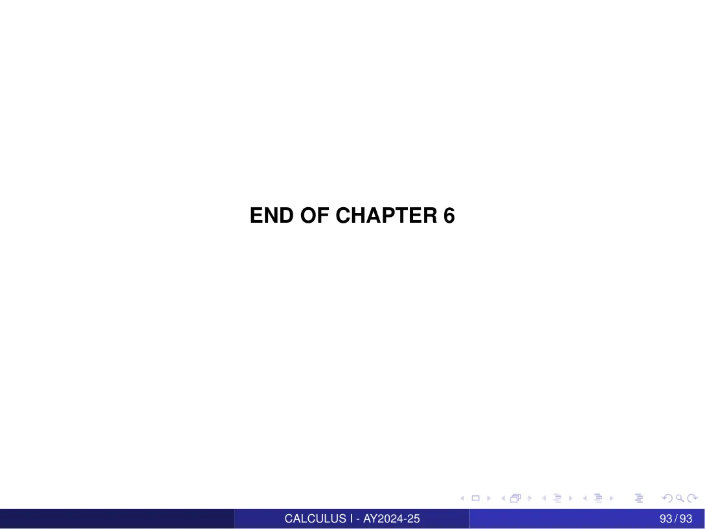
End of Chapter 6, and of the course material. Recap: sequences and their limits, series and the tests for convergence, power series, radius and interval of convergence, Taylor and Maclaurin series, and the Taylor remainder with its three applications (convergence, error, number of terms).
Kết thúc Chương 6, và của tài liệu khóa học. Tóm tắt: dãy số và giới hạn, chuỗi và các tiêu chuẩn hội tụ, chuỗi lũy thừa, bán kính và khoảng hội tụ, chuỗi Taylor và Maclaurin, và phần dư Taylor với ba ứng dụng (hội tụ, sai số, số số hạng).